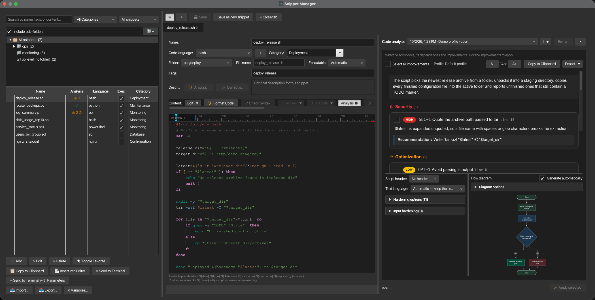
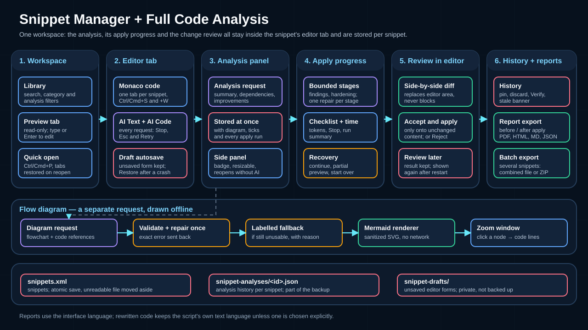
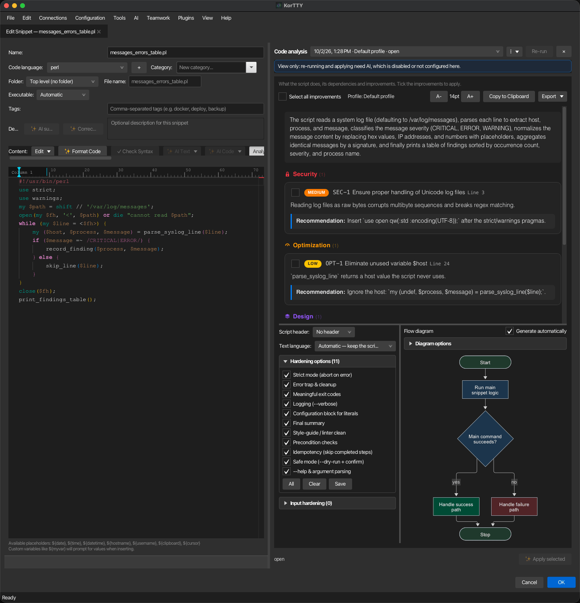
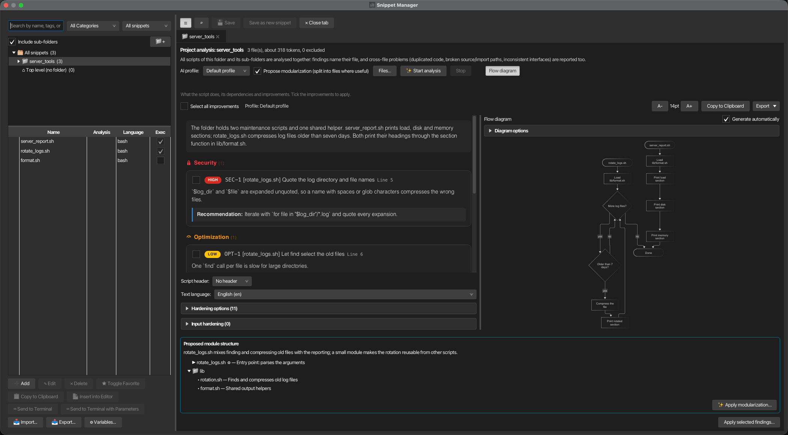
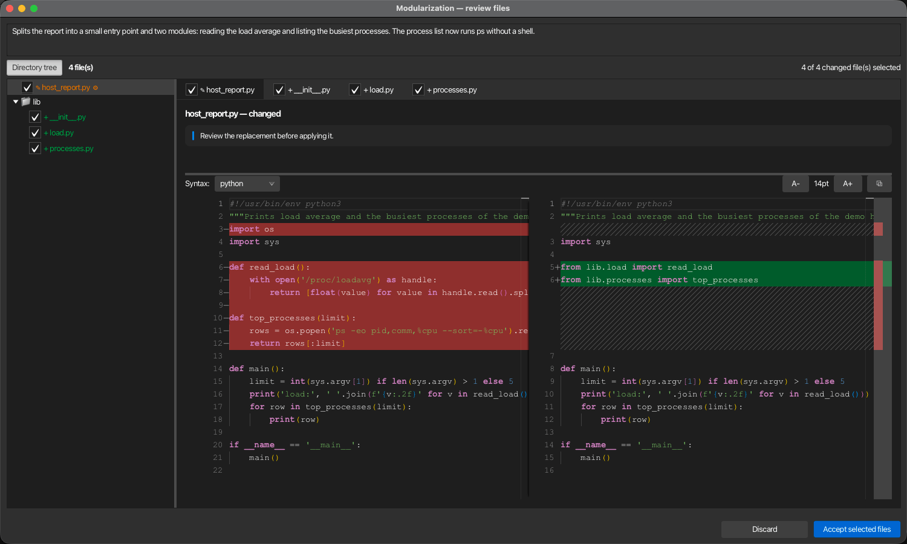

Snippet-Manager¶
Der Snippet-Manager ermöglicht es Ihnen, wiederverwendbare Code-Snippets, Skripte und Konfigurationsvorlagen zu speichern, zu organisieren und schnell einzufügen. Es ist ein Arbeitsbereich: die Snippet-Bibliothek links, die von Ihnen bearbeiteten Snippets als Editor-Tabs rechts und – innerhalb jedes Editors – ein KI-Analyse-Panel, dessen Ergebnisse zusammen mit dem Snippet gespeichert werden. Verwalten Sie Snippets in mehreren Sprachen mit Syntax-Hervorhebung, erweiterter Suche, KI-unterstütztem Bearbeiten, Platzhaltervariablen und flexiblen Exportoptionen.

Übersicht¶
- Bibliothek — Suchfunktion, Kategorisierung und Filter sowie eine sortierbare Tabelle mit Snippets, die die Aktionen zum Einfügen, Senden, Importieren und Exportieren enthält. Siehe Die Bibliothek.
- Bearbeitungs-Tabs — Ein schreibgeschützter Vorschau-Tab zum Durchstöbern und ein Bearbeitungs-Tab pro Snippet, das bearbeitet wird, mit schnellem Öffnen, Tastaturkürzeln und Tabs, die beim nächsten Start wieder auftauchen. Siehe Durchstöbern und Bearbeiten.
- Nichts, was nicht gespeichert wurde, wird verloren — Jeder Schließvorgang fragt nach ungespeicherten Änderungen, und ein ungespeicherter Bearbeitungsformular bleibt bei einem Crash als Entwurf erhalten. Siehe Schließen und ungespeicherte Änderungen.
- KI im Editor — KI-basierte Text- und Code-Aktionen, Code-Vervollständigung sowie eine nicht blockierende Überprüfung aller KI-Änderungen innerhalb des Editors; jede KI-Anfrage kann gestoppt und erneut ausgeführt werden. Siehe KI-betriebene Editor-Funktionen.
- Vollständige Code-Analyse — Eine gespeicherte Analyse pro Snippet in der Seitenleiste des Editors: die ausgewählten Ergebnisse in begrenzten Phasen anwenden, das Ergebnis im Editor überprüfen, validieren und vor- und nachherberichte exportieren. Siehe Vollständige Code-Analyse.

Der Snippet-Manager-Arbeitsbereich¶
Öffnen des Snippet-Managers¶
- Menü: Extras → Snippet-Manager
- Verknüpfung: Ctrl+Shift+S (Cmd+Shift+S auf macOS)
Der Snippet-Manager ist ein Arbeitsbereich: die Snippet-Bibliothek (Suche, Kategoriefilter, die Snippet-Tabelle und ihre Aktionen) links und die von Ihnen bearbeiteten Snippets als Tabs rechts. Jede Hauptfenster hat einen Snippet-Manager – ein eigenes Fenster oder ein Tab, wenn Tool-Fenster als Tabs öffnen aktiviert ist. Das erneute Öffnen bringt das vorhandene Fenster nach vorne und setzt den Cursor in das Suchfeld.
Als eigenständiges Fenster geöffnet, merkt sich der Snippet-Manager seine Größe und Position, auch wenn korTTY beendet oder unerwartet endet; als Tab des Hauptfensters folgt er dem Hauptfenster.
Die Bibliothek¶
Die Bibliothek listet jedes Snippet in einer Tabelle auf:
- Systemspalte (Betriebssystem) – Eine sortierbare Betriebssystemspalte für jedes Snippet (Beliebig, Linux, macOS, Windows). Wird automatisch festgelegt, wenn ein Snippet über Workflow-Skript generieren erstellt wird.
- Sortierbare Spalten — Alle Spalten (Name, Analyse, Sprache, Exec, Kategorie, System, Tags, Zeilen, Letzte Änderung, Benutzt) sind sortierbar.
- Ausführs-Spalte — Ob das Snippet als ausführbare Datei exportiert oder auf einen Server kopiert wird. Eine dunkle Kontrollkästchen ist der automatische Wert; ein Klick darauf setzt das Flag explizit, ein Klick darauf zurück auf den automatischen Wert führt zu Automatisch. Siehe Ausführbar-Flag.
- Analyse-Spalte — Zeigt den Status jedes Snippets' gespeicherter Vollständige Code-Analyse auf einen Blick: ⚠ 3 — drei Ergebnisse der neuesten Analyse wurden noch nicht auf das gespeicherte Snippet übertragen; ◷ — ein Ergebnis wartet auf Ihre Prüfung ("Später prüfen"); ✓ — alle Ergebnisse wurden angewendet oder die Analyse fand nichts zu beheben; ✎ — ein KI-Ergebnis wurde im Editor angewendet, aber das Snippet wurde nie mit diesem gespeichert, korTTY erinnert sich an diesen Zustand (siehe Angewendet, aber nicht gespeichert); ↻ nach dem Symbol — das Snippet hat sich seit der Analyse geändert. Hover über eine Zelle für Details und den Datum der Analyse. Die Spalte wird im Hintergrund ausgefüllt, sobald der Snippet-Manager geöffnet wird und folgt jeder neuen Analyse, Anwendung, Ablehnung und Speicherung, sodass selbst eine Bibliothek mit hunderten Snippets sofort geöffnet werden kann, ohne zu warten. Die Sortierung nach dieser Spalte zeigt zuerst die offen zu prüfenden Ergebnisse, dann die Snippets mit einem erinnerten, nicht gespeicherten Ergebnis und schließlich die Snippets mit den meisten offenen Ergebnissen.
- Analyse-Filter — Das Dropdown neben dem Kategorie-Filter reduziert die Liste auf die Snippets, die Aufmerksamkeit erfordern: Offene Findings, Veraltete Analyse oder Prüfung ausstehend — ein Postfach für Entscheidungen, die Sie noch offen haben: Ergebnisse, die Sie für später beibehalten haben, und Ergebnisse, die Sie noch nicht gespeichert haben. Alle Snippets zeigt alles erneut. Der Filter kombiniert sich mit der Suche und dem Kategorie-Filter.
- Zeilen und Letzte Änderung — Zeilen zeigt die Anzahl der Zeilen im Snippet, Letzte Änderung das Datum und die Uhrzeit seiner letzten Änderung (die Erstellungszeit für ein Snippet, das nie bearbeitet wurde).
- Verstellbare Spalten — Jede Spalte kann durch Ziehen ihrer Kopfzeilenkante vergrößert oder verkleinert werden; korTTY merkt sich die Breiten über Sitzungen hinweg.
- Skript-Header-Kategorie – Eine feste, nicht löschbare Kategorie, die wiederverwendbare Header-Vorlagen für die Workflow-Skript-Generierung enthält.
- Löschen — Ein Snippet mit nicht gespeicherten Änderungen in einem offenen Editor kann nicht gelöscht werden; korTTY zeigt stattdessen diesen Editor an. Der Editor-Tab eines gelöschten Snippets ohne nicht gespeicherte Änderungen schließt sich.
Die untenliegenden Buttons und das rechte Klick-Menü fügen, kopieren und senden das ausgewählte Snippet (siehe Snippets an den Terminal senden), importieren und exportieren Snippets (siehe Import und Export), den Variablen-Manager öffnen und für mehrere ausgewählte Snippets die gespeicherten Analysen exportieren (siehe Berichte mehrerer Snippets exportieren).
Eine nicht lesbare Snippet-Datei wird zur Seite verschoben, nicht gelöscht
Wenn snippets.xml beim Start von korTTY nicht gelesen werden kann, benennt korTTY es neben der Originaldatei in snippets.xml.corrupt-<date>-<time> um, fährt mit einer leeren Liste fort und informiert Sie beim ersten Öffnen des Snippet-Managers. Stellen Sie die verschobene Datei oder ein korTTY Backup wieder her, um die Snippets zurückzubekommen. Snippets werden immer atomar geschrieben, sodass ein unterbrochener Speichervorgang keine halbgeschriebene Datei hinterlässt.
Ordner¶
Über der Tabelle organisiert ein Ordnerbaum die Bibliothek. Alle Snippets zeigt alles, jeder Ordner zeigt seine Snippets (mit Unterordner einbeziehen aktiviert auch die aller Unterordner), und Oberste Ebene (kein Ordner) zeigt die Snippets, die keinem Ordner zugeordnet sind. Die Zahl nach jedem Eintrag zählt seine Snippets. Ordner sind unabhängig von Kategorien: ein Snippet hat einen Ordner und, wie zuvor, eine Kategorie.
- Erstellen — Der 📁+ Button über dem Baum, oder Neuer Ordner im Rechtsklick-Menü des Baums, erstellt einen Ordner unter dem ausgewählten (auf der obersten Ebene, wenn Alle Snippets ausgewählt ist). Ordnernamen müssen innerhalb ihres Elternteils eindeutig sein; Pfadtrennzeichen werden ersetzt.
- Snippets verschieben — Ziehen Sie eine oder mehrere ausgewählte Zeilen aus der Tabelle in einen Ordner. Das Ablegen auf Alle Snippets oder Oberste Ebene (kein Ordner) verschiebt sie aus jedem Ordner heraus. In Ordner verschieben… im Rechtsklickmenü der Tabelle tut das Gleiche ohne die Maus.
- Ordner verschieben — Ziehen Sie einen Ordner in einen anderen Ordner; ein Ordner kann nicht in sich selbst oder eines seiner Unterordner verschoben werden.
- Umbenennen und löschen — Ordner umbenennen (auch F2) und Ordner löschen (auch Del) im Rechtsklickmenü des Baums. Beim Löschen wird gefragt, ob Ordner löschen, Snippets behalten — dessen Snippets und Unterordner werden eine Ebene nach oben verschoben — oder Ordner und Snippets löschen, was noch einmal fragt, bevor sie zusammen mit ihren gespeicherten Analysen gelöscht werden.
- Folder-Aktionen — Das rechte Klick-Menü im Baum bietet auch Ordner ins Terminal-Verzeichnis kopieren (siehe Dateien ins Terminal-Verzeichnis kopieren), Ordner exportieren… (siehe Ein Ordner exportieren), Vollständige Code-Analyse (Ordner als Projekt) (siehe Ein Ordner als ein Projekt analysieren) und Analyse-Reports exportieren… für jedes Snippet unter dem Ordner.
Ausführbar-Flag¶
Jedes Snippet hat ein Ausführbar-Flag, das den Dateimodus bestimmt, wenn es exportiert oder auf einen Server kopiert wird: ausführbare Dateien erhalten rwxr-xr-x (755), alle anderen rw-r--r-- (644). Ordner werden immer als 755 erstellt.
- Automatisch (Standard) — Eine Datei mit einer Skript-Erweiterung (
.sh,.bash,.zsh,.ksh,.py,.pl,.rb,.groovy,.ps1) oder eine erste Zeile, die mit#!beginnt, ist ausführbar; alles andere nicht. - Ausführbar / Nicht ausführbar — explizit im Editorfeld Ausführbar festgelegt, mit der Exec-Spalte oder für mehrere Snippets gleichzeitig über Ausführbar-Flag im Rechtsklick-Menü der Tabelle (das auch Automatisch zum Zurücksetzen anbietet).
Durchsuchen und Bearbeiten¶
- Durchsuchen — Klicken Sie auf eine Zeile oder bewegen Sie sich mit den Pfeiltasten durch die Liste, um das Snippet im schreibgeschützten Vorschau-Tab anzuzeigen. Es gibt nur einen Vorschau-Tab; das Durchsuchen ersetzt dessen Inhalt und startet niemals einen Editor oder eine KI-Aktion.
- Bearbeiten — Doppelklicken Sie auf eine Zeile, drücken Enter in der Liste, klicken Bearbeiten, oder beginnen Sie einfach mit Tippen im Vorschau. Das Snippet öffnet sich dann in einem eigenen Editor-Tab, und der von Ihnen getippte Charakter gelangt dorthin. Ein Snippet ist in höchstens einem Editor-Tab gleichzeitig geöffnet, über alle Hauptfenster hinweg; ein erneutes Öffnen wählt diesen Tab aus. Ein Snippet, das bereits in einem anderen Hauptfenster geöffnet ist, zeigt stattdessen ein Zum Editor wechseln-Banner in der Vorschau.
- Schnell öffnen — Ctrl+P (Cmd+P auf macOS), oder die ⌕-Taste, öffnet ein Suchfeld über den Snippet-Namen und -Tags. Die eingegebenen Buchstaben müssen nur in der Reihenfolge erscheinen (
dplyfindetdeploy.sh); Namen, die mit dem Eingetippten beginnen oder es enthalten, werden zuerst angezeigt. Up / Down wählen, Enter öffnet das Snippet in einem Editor-Tab, Esc schließt das Feld. - Tabs — Tabs mit nicht gespeicherten Änderungen zeigen einen Punkt (●) nach dem Namen, ein kleiner Spinner zeigt an, dass eine KI-Aktion in diesem Tab ausgeführt wird. Rechtsklick auf einen Tab für Schließen, Andere schließen, Alle schließen und In der Liste zeigen.
- Aktionen — Speichern speichert den aktiven Tab (auch Ctrl+S, Cmd+S auf macOS), Als neues Snippet speichern speichert das Formular des aktiven Tabs als neues Snippet und lässt das Original unverändert, Tab schließen schließt es (auch Ctrl+W, Cmd+W auf macOS) und fragt nach nicht gespeicherten Änderungen. Der ☰-Knopf (Ctrl+B, Cmd+B auf macOS) versteckt die Bibliothek, sodass der Editor die volle Breite erhält, und bringt sie wieder zurück. Wenn ein Editor sein Analysefenster öffnet und der Code breiter als etwa 640 Pixel wird, klappt die Bibliothek von selbst zusammen und kommt zurück, wenn das Fenster geschlossen wird; sie zu verstecken oder anzuzeigen, bleibt Ihre Wahl.
- Fortsetzen von dort, wo Sie aufgehört haben — Die Editor-Tabs, die beim letzten Schließen des Snippet-Managers offen waren, und der aktive Tab werden beim nächsten Mal wieder geöffnet. Zwischenzeitlich gelöschte Snippets werden übersprungen, und höchstens zwölf Tabs werden wiederhergestellt.
Schließen und nicht gespeicherte Änderungen¶
- Schließen — Esc schließt den Snippet-Manager nie. Beim Schließen (Fenster-Schließknopf, Ctrl+Q oder das × des Hauptfensters-Tabs) wird einmal nach allem gefragt, was nicht gespeichert ist: die eigene Frage des Editors für ein Snippet oder Alle speichern / Alle verwerfen / Abbrechen bei mehreren.
- Nicht gespeicherte Änderungen gehen nie stillschweigend verloren — Jede andere Schließmethode stellt dieselbe Frage, bevor etwas geschlossen wird: Ctrl+W (Cmd+W auf macOS) beim Snippet-Manager oder einem Editor-Tab, Alle Tabs schließen, ein Projekt öffnen, das Hauptfenster schließen und korTTY beenden. Abbrechen lässt alles offen. Beim Beenden wird auch noch gefragt, ob Snippet-Editor-Fenster, die keinem Hauptfenster zugeordnet sind, zum Beispiel das aus dem Swarm-Fenster geöffnete, geschlossen werden sollen.
- Eine laufende KI-Aktion — Beim Schließen des Snippet-Managers, während in einem seiner Tabs eine KI-Aktion läuft, wird zuerst gefragt, weil das Schließen die Aktion abbricht.
- Nicht gespeicherte Änderungen überleben einen Absturz — Wenn ein Editor nicht gespeicherte Änderungen hat, behält korTTY zwei Sekunden nach der letzten Änderung einen Entwurf seiner Form (Name, Sprache, Kategorie, Tags, Beschreibung und Code) in
~/.kortty/snippet-drafts/bei, der nur für Sie lesbar ist und nicht Teil des Backups wird. Das Speichern oder Verwerfen der Änderungen entfernt den Entwurf. Wenn korTTY abgestürzt oder beendet wurde, zeigt das erneute Öffnen des Snippets Nicht gespeicherte Änderungen von … wurden gefunden über der Form mit Wiederherstellen und Verwerfen; nichts wird angewendet, bis Sie Wiederherstellen wählen, das die Form füllt und den Tab unverändert lässt, sodass Sie vor dem Speichern prüfen können. Das Banner erwähnt auch, wann das Snippet seit der Entwurfsaufnahme anders gespeichert wurde. Entwürfe neuer Snippets, die nie gespeichert wurden, werden angeboten, wenn der Snippet-Manager öffnet (Nicht gespeicherte neue Snippets gefunden); Wiederherstellen öffnet jedes in einem neuen Editor-Tab. Dies gilt für Snippet-Manager-Tabs und für von anderen Orten geöffnete Snippet-Editor-Fenster, nicht jedoch für Editoren von Dateien aus dem SFTP-Manager oder dem lokalen Dateibrowser.
Note
Snippets, die von anderen Orten geöffnet werden – dem SFTP-Manager, dem lokalen Dateibrowser, dem Terminal, dem KI-Chat, dem KI-Agent und dem Swarm-Fenster – öffnen sich in ihrem eigenen Editorfenster oder in einem Tab des Hauptfensters, wenn Tool-Fenster als Tabs öffnen aktiviert ist. Ein Snippet, das in einem solchen Editor geöffnet ist, wird nicht noch einmal im Snippet-Manager geöffnet; korTTY bringt stattdessen diesen Editor in den Vordergrund.
Snippets erstellen und bearbeiten¶
- Klicken Sie auf Hinzufügen in der Bibliothek für ein neues Snippet (es öffnet sich in einem neuen Editor-Tab), oder öffnen Sie ein vorhandenes Snippet wie oben beschrieben.
- Füllen Sie die Felder aus:
- Name – Ein beschreibender Name.
- Codesprache – Wählen Sie die Programmiersprache aus (Bash, Python, Java, JavaScript, TypeScript, SQL, XML, JSON, YAML und mehr). Aktiviert die Syntaxhervorhebung. Mit der Schaltfläche „Hinzufügen“ (+) neben der Liste wird eine Sprache hinzugefügt, die noch nicht angeboten wird: Geben Sie ihren Namen einmal ein und sie wird gespeichert und in jedem zukünftigen Snippet-Editor angeboten. Für die KI-Eingabeaufforderungen und die Dateierweiterung wird eine selbst hinzugefügte Sprache verwendet; Die Syntaxhervorhebung greift auf einfachen Text zurück, es sei denn, korTTY liefert zufällig eine Grammatik dafür.
- Text-Sprache – Welche Sprache sollte KI-geschriebener Code für Kommentare und für Nachrichten verwenden, die Benutzern angezeigt, protokolliert oder als Hilfe gedruckt werden? Die Standardeinstellung Automatisch – Sprache des Skripts beibehalten lässt die eigene Prosa des Snippets in Ruhe: korTTY schreibt neuen Text in der Sprache, die das Skript bereits verwendet, und übersetzt nichts. Die Auswahl einer Sprache ist stattdessen eine bewusste Anweisung, den vorhandenen Text des Snippets in diese zu konvertieren. Es ist unabhängig von der korTTY-Schnittstellensprache. Aktivieren Sie Als Standard speichern, um die Auswahl für zukünftige Snippets beizubehalten. andernfalls gilt es nur für diesen Editor.
- Kategorie – Wählen Sie eine vorhandene Kategorie aus oder geben Sie eine neue ein. Die feste, nicht löschbare Kategorie Script-Header enthält wiederverwendbare Header-Vorlagen für generierte Workflow-Skripte.
- Ordner — Der Bibliotheksordner, in dem das Snippet liegt; Oberste Ebene (kein Ordner) für keine.
- Dateiname — Der Name, den das Snippet als Datei erhält, wenn es exportiert oder auf einen Server kopiert wird. Leer gelassen, ermittelt korTTY ihn aus dem Namen und der Programmiersprache (das Feld zeigt diesen Namen als Hinweis an), zum Beispiel
deploymit Bash wird zudeploy.sh. - Ausführbar — Automatisch, Ausführbar oder Nicht ausführbar; die Hinweise sagt, was Automatisch für diese Datei bedeutet. Siehe Ausführbar-Flag.
- System – Wählen Sie optional ein Zielbetriebssystem (Beliebig, Linux, macOS, Windows). Automatische Einstellung bei Erstellung über Workflow-Skript generieren basierend auf dem geprüften Betriebssystem des Agenten; Sie können es für jedes Snippet manuell überschreiben.
- Tags – Durch Kommas getrennte Schlüsselwörter für die Suche (z. B.
docker, deploy, backup). - Description – Optionale Freitextbeschreibung des Snippets.
- Inhalt – Der Snippet-Code. Der Editor bietet Live-Syntaxhervorhebung basierend auf der ausgewählten Sprache.
- Klicken Sie auf Speichern (oder drücken Sie Ctrl+S, Cmd+S unter macOS). Der Tab bleibt geöffnet, und die Bibliothekszeile wird an Ort und Stelle aktualisiert und bleibt ausgewählt. Beim Bearbeiten eines vorhandenen Eintrags speichert Als neues Snippet speichern den aktuellen Inhalt als neues Snippet mit einer neuen ID und lässt das Original unverändert; das neue Snippet ersetzt das Original im Tab. Wenn das Original Codeanalysen gespeichert hat, fragt korTTY, ob diese mitgenommen werden sollen: Mitnehmen gibt dem neuen Snippet eine Kopie davon, das Original behält seine eigene.
Editor-Symbolleiste und Funktionen¶
Die Symbolleiste des Snippet-Editors bietet:
- Formatierungscode – Formatieren Sie den Inhalt mit lokalen Formatierern oder KI-gestützter Formatierung.
- Syntax prüfen – Validieren Sie die Syntax (lokal oder KI-unterstützt).
- KI-Text – Korrigieren Sie die Rechtschreibung, übersetzen Sie oder erstellen Sie technische Beschreibungen.
- KI-Code – Vervollständigen Sie den Code, führen Sie eine vollständige Codeanalyse durch, verbessern Sie eine Auswahl (Lesbarkeit, Robustheit, Leistung, Kommentare oder eine benutzerdefinierte Anweisung), migrieren Sie das Snippet in eine einzelne Sprache, überprüfen Sie die Sicherheit oder generieren Sie Diagramme.
- Einzeiler – Als Terminal-Einzeiler exportieren.
- Editor-Zoom – Passen Sie die Textgröße mit Ctrl++ und Ctrl+- an, auch wenn der Editor ein Tab des Hauptfensters oder ein Snippet-Manager-Tab ist.
- Editor-Profile – Wechseln Sie zwischen integrierten, von IntelliJ inspirierten Profilen und benutzerdefinierten Farbschemata.
- Hintergrundhelligkeit – Editor-Hintergrund anpassen.
- Zeilenumbruch – Zeilenumbruch ein-/ausschalten.
- Zeilennummern – Anzeige der Zeilennummern umschalten.
Wenn der Editor über den SFTP-Manager für eine lokale oder Remote-Datei geöffnet wird, bleibt dieselbe Symbolleiste verfügbar und das Dialogfeld verwendet Schaltflächen zum Speichern im Dateimodus.
Spaltenlineal und Formatierung der Zeilenbreite¶
Oberhalb des Inhaltsfelds hält das Spaltenlineal die aktuelle Caret-Spalte links als Column N fest und zeigt eine Live-Markierung an der entsprechenden Editorposition an. Wenn Sie mit der Maus über den Live-Marker fahren, wird Position N angezeigt. Klicken Sie auf das Lineal, um eine Markierung für die maximale Zeilenlänge festzulegen (Spalten 20–240). Klicken Sie mit der rechten Maustaste auf diese Markierung, um den Inhalt auf die ausgewählte Breite zu formatieren oder die Markierung zu entfernen.
Die Formatierung der Zeilenbreite funktioniert lokal nur für Formatierer, die konfigurierbare Breite unterstützen:
- Prettier-gestützte Webformate (JavaScript, TypeScript, HTML, CSS)
- Python (Schwarz)
- Perl (Perl::Tidy)
Für Sprachen ohne lokale Zeilenlänge-Unterstützung fragt korTTY ab, ob KI-geleitete Formatierung verwendet werden soll. Sowohl lokale Zeilenlänge-Formatierung als auch KI-geleitete Formatierung zeigen im Editor-Area vor der Änderung eine Vorschau vor und nach der Änderung; siehe Ein KI-Änderung überprüfen.
Formatcode¶
Format Code nutzt den gemeinsam genutzten lokalen Formatierungsdienst von KorTTY:
- Eingebaute Formatierer: JSON, XML, YAML/YML, TOML, INI/properties, Groovy
- Gebündelte Formatierer: Java (google-java-format), Bash/Shell (shfmt), Web/JS/TS/HTML/CSS (Prettier), SQL (sql-formatter), Perl (Perl::Tidy)
- Fallback: Optionale PATH-Fallbacks für Entwickler-Setups, wenn ein gebündelter Formatierer fehlt
Prettier läuft als Offline-Standalone-Browser-Build mit nur den Plugins Babel, Estree, TypeScript, HTML und PostCSS; SQL verwendet den gebündelten SQL-Formatter-Browser-Build. Beide werden träge in einem isolierten JavaFX-WebView initialisiert und benötigen keine installierte oder gepackte Node.js-Laufzeit. Anfragen werden serialisiert und behalten das gleiche 15-Sekunden-Timeout, die gleiche Anbieteranzeige und die konfigurierbare Prettier-Linienbreite wie das Prozess-Backend; Eine ausgefallene oder abgelaufene Engine wird vor der nächsten Anfrage verworfen.
Wenn die lokale Formatierung nicht verfügbar ist und das konfigurierte KI-Profil Snippet-KI-Funktionen bietet, fragt KorTTY, ob die KI-Unterstützung verwendet werden soll. Die KI-Formatierung wird erst angewendet, nachdem die Vorher/Nachher-Vorschau akzeptiert wurde.
Editor-Profile¶
Wechseln Sie zwischen:
- Aktuelle benutzerdefinierte Farben – Benutzerdefinierte Palette
- 10 integrierte, von IntelliJ inspirierte Profile – Vordefinierte Farbschemata
- Vom Benutzer erstellte Profile – Von Ihnen erstellte benutzerdefinierte Profile
Profile speichern Vordergrund-/Hintergrundfarben, Syntaxfarben, Cursorfarbe und Cursorstil.
KI-unterstützte Editorfunktionen¶
Wenn AI konfiguriert ist, bietet der Snippet-Editor zusätzliche Aktionen:
Stoppen und erneutes Ausführen von KI-Anfragen¶
Jede KI-Anfrage im Snippet-Bereich kann während der Ausführung gestoppt und anschließend wiederholt werden – der KI-Vorschlag, die Rechtschreibkorrektur, Textkorrektur und Übersetzung, technische Beschreibungen, jede KI-Code Aktion (Verbesserungen, Sprachmigration, Code-Assistent, Sicherheitsprüfung und -korrekturen, KI-Formatierung, KI-Syntaxprüfung, kompakter One-Liner), Diagramme, die Vollständige Code-Analyse mit ihrer Verifikation und Anwendungsdurchläufen sowie alternative Lösungen.
- Stopp — Während eine Anfrage läuft, zeigt die Hinweisleiste des Editors an, was gerade ausgeführt wird, wie lange es bereits läuft (zum Beispiel
0:42) und einen ■ Stopp-Button. Esc tut das Gleiche, während der Fokus sich überall im Editor oder in seinem Analysefenster befindet; es schließt weder den Editor noch den Snippet-Manager, und eine Änderungsüberprüfung behält ihre eigene Esc-Verarbeitung bei. Das Analysefenster wiederholt die Laufzeit und ■ Stopp in seinem Banner, das Diagrammfeld zeigt sie unter seinem Spinner an, und das Alternative Lösungen-Fenster hat seinen eigenen ■ Stopp (Esc dort stoppt statt das Fenster zu schließen). Das Stoppen wirkt sofort: korTTY schließt die Verbindung zum Modell — ein lokales llama.cpp- oder MLX-Modell stoppt das Generieren, wenn die Verbindung geschlossen wird — oder beendet einen CLI-Anbieter zusammen mit jedem Prozess, den er gestartet hat, und was das Modell danach noch antwortet, wird verworfen. Eine gestoppte Anfrage wird nie gespeichert, nie angewendet und nicht als Fehler gemeldet, und der Editor ist sofort für die nächste Aktion bereit. - Erneut senden — Nach einem Stopp, einer Fehlfunktion oder einem Timeout wird die Hinweisleiste amber und zeigt Gestoppt: … oder Fehlgeschlagen: … mit ↻ Erneut senden und ✕ zum Schließen. Erneut senden führt die gleiche Anfrage erneut mit denselben Eingaben aus: das gleiche Profil, Optionen, Anweisungen und bei Aktionen auf einer Auswahl die gleiche ausgewählte Reichweite — korTTY wählt sie erneut für Sie aus. Wenn sich der ausgewählte Text inzwischen geändert hat, ist Erneut senden deaktiviert und die Leiste erklärt warum; wählen Sie den Text erneut aus und starten Sie die Aktion neu. Aktionen auf dem gesamten Snippet laufen auf dessen aktuellem Inhalt. Das Analysefenster bietet ↻ Erneut senden in einem Banner für eine gestoppte oder fehlgeschlagene Analyse (das gleiche Profil, und bei einer Verifikation die gleiche verglichene Analyse), das Diagrammfeld bietet es anstelle des Diagramms, und das Alternative Lösungen-Fenster wiederholt die letzte Anfrage mit ihren Anweisungen und Profil. Eine Geistertext-Vervollständigung kann ebenfalls gestoppt werden, bietet jedoch kein Erneut senden: erneut pausieren oder Ctrl+Space fragt neu an.
- Anwenden ausführen — ■ Stopp im Fortschrittsbereich (oder in der Hinweistafel, oder Esc) beendet ein Anwenden der Vollständigen Code-Analyse; die Ausführung wird als abgebrochen angesehen und der Checkpoint wird beibehalten, sodass Verbleibende Schritte fortsetzen angeboten wird, wie unter Vollständige Code-Analyse beschrieben. ↻ Von vorn beginnen wiederholt die ganze Ausführung mit der gleichen Auswahl, und eine Ausführung, die vor dem Abschluss des ersten Schritts abgebrochen wurde, bietet ↻ Erneut senden.
KI-Vorschläge¶
- KI-Vorschlag – Erzeugt einen Dateinamen, eine Beschreibung, Codesprache und Text-Sprache aus dem aktuellen Codeinhalt. Eine erkannte Codesprache, die noch nicht in der Liste enthalten ist, wird dieser hinzugefügt, sodass die Erkennung niemals stillschweigend verworfen wird.
- Korrekte Schreibweise – Im Beschreibungsfeld; sendet nur Beschreibungstext an die KI.
Textsprache¶
Wenn KI konfiguriert ist, wählt Text-Sprache – direkt unter Codesprache im Editorformular – aus, welche Sprache der von KI geschriebene Code für seine Kommentare und Nachrichten verwendet und in welcher Sprache die Rechtschreibkorrektur funktioniert.
Die Standardeinstellung ist Automatisch – behalten Sie die Sprache des Skripts bei. korTTY ermittelt, in welcher Sprache die Kommentare und Nachrichten des Snippets bereits geschrieben sind, und verlangt von der KI, diese beizubehalten: Vorhandener Text bleibt unverändert und alles Neue wird passend geschrieben. Ein auf Englisch kommentiertes Skript bleibt auch dann englisch, wenn Sie korTTY auf Deutsch ausführen. Bezeichner, Dateipfade, Befehle, Optionen, Konfigurationsschlüssel und andere Code-Tokens werden in keinem der beiden Modi berührt.
Die Auswahl einer Sprache ist stattdessen eine explizite Anweisung, die Prosa des Snippets in diese zu konvertieren – das vorherige Verhalten, jetzt Opt-in statt automatisch. Eine auswahlbasierte Aktion wendet den Vertrag auf seine zurückgegebene Auswahl an, was einen vollständigen Ersatz für das gesamte Skript darstellt.
Wenn korTTY nicht erkennen kann, welche Sprache ein Skript verwendet – es gibt zu wenig Text, um es zu beurteilen, oder die Kommentare sind gemischte Sprachen –, fragt es nach, bevor etwas geändert wird, anstatt zu raten. Aktivieren Sie in diesem Dialog das Häkchen bei Für dieses Snippet merken, damit die Frage für dieses Snippet nicht erneut gestellt wird. Durch das Schließen des Dialogs wird die Aktion abgebrochen und der Code bleibt unberührt.
All dies ist unabhängig von der korTTY-Schnittstellensprache und dem Codesprache-Selektor, der weiterhin die Programmiersprache und die Syntaxhervorhebung definiert. Analyseberichte, Verbesserungsbeschreibungen und Analysediagrammbeschriftungen folgen immer der korTTY-Schnittstellensprache.
Die Liste enthält korTTYs eigene Schnittstellensprachen sowie alle von Ihnen hinzugefügten KI-generierten Sprachen . KI-Vorschlag kann es auch für Sie ausfüllen: Es liest die Kommentare des Snippets und seine gedruckte Ausgabe (echo, print, printf, Write-Host und ähnliches) und wählt die gefundene Sprache vor – einschließlich einer Sprache, für die korTTY keine Schnittstellenübersetzung hat, die dann der Liste hinzugefügt wird. Ein Skript ohne für Menschen lesbaren Text lässt die aktuelle Auswahl unberührt.
Lassen Sie Als Standard speichern deaktiviert, um eine vorübergehende Auswahl zu treffen, die nur für das aktuelle Editorfenster gilt. Markieren Sie es, um die ausgewählte Sprache als Standard für neu geöffnete Snippet-Editoren zu speichern; Dadurch wird die bestehende Standardsprache für KI-Text im Code-Einstellung unter Einstellungen → AI aktualisiert. Andere bereits geöffnete Editorfenster behalten ihre eigene Auswahl.
Die Rechtschreibkorrektur verwendet die ausgewählte Sprache für Grammatik- und Rechtschreibregeln, ohne den Text zu übersetzen. Auswahl übersetzen… behält seinen separaten Zielsprachendialog bei und wählt zunächst die aktuelle Textsprache aus. Lokale Formatierer und Syntaxprüfungen sind davon nicht betroffen.
AI Textmenü¶
- Rechtschreibung in der Auswahl korrigieren – Tippfehler im ausgewählten Text korrigieren.
- Auswahl übersetzen… – Ausgewählten Text in eine andere Sprache übersetzen.
- Technische Beschreibung – Dokumentation für den ausgewählten Code oder das gesamte Snippet erstellen.
Optionale zusätzliche Anweisungen¶
Wenn die Option in Einstellungen → KI aktiviert ist, zeigt der Editor ein Feld mit gemeinsamen Anweisungen an, das bei Anfragen zur Rechtschreibkorrektur, Übersetzung und technischen Beschreibung gesendet wird.
Letzte KI-Änderung umschalten¶
Die Schaltfläche ↺ wechselt zwischen dem Originalcode und der letzten KI-generierten Editoränderung.
AI Codevervollständigungen¶
Der Snippet-Editor bietet zwei Arten der Code-Vervollständigung, beide innerhalb des Monaco-Editors: eine Vervollständigungsliste, die Sie bei Bedarf öffnen, und optionalen Geistertext, der nach einer Tipppause von selbst erscheint. Die Tasten sind unter Tastaturkürzel aufgeführt.
- Vervollständigungsliste – Drücken Sie Shift+Tab mit dem Cursor am Ende einer Zeile, in der sich Text befindet, oder Ctrl+Space irgendwo im Editor (unter macOS ist das das Physische). Ctrl Schlüssel; weil macOS oft reserviert Ctrl+Space zum Umschalten von Eingangsquellen, Cmd+I Und Alt+Esc öffnen Sie auch die Liste). Die Liste wird sofort mit Kandidaten geöffnet, die aus dem Snippet selbst stammen – den Arrays, Hashes, Variablen und Funktionen, die zur Stelle passen, gefolgt von Redewendungen der Sprache: after
for x inIn einem Bash-Skript steht jedes Array an erster Stelle und danachuse POSIXin Perl das Üblicheqw(...)Listen importieren. Up / Down Verschieben der Auswahl, Eingabe filtert die Liste, Enter oder Tab fügt den ausgewählten Eintrag ein und Esc schließt die Liste. Als Vorlage wird ein Idiom mit Platzhaltern eingefügt Tab springt von einem Platzhalter zum nächsten. AI Complete im Menü AI Code und im Kontextmenü des Editors öffnet dieselbe Liste. Tab immer noch Einrückungen, und Shift+Tab Überall außer am Ende einer nicht leeren Zeile wird immer noch ausgerückt. Die Kombination liegt bei Ihnen: Konfiguration → Globale Einstellungen → Snippet-Editor verfügt über ein Feld Tastenkürzel KI-Vervollständigung, das alles aufzeichnet, was Sie drücken – eine Taste oder eine Taste mit bis zu drei Modifikatoren – und es auf später geöffnete Snippet-Editoren anwendet Ctrl+Space arbeitet weiter; siehe Einstellungen des Snippet-Editors. - KI-Kandidaten – Wenn ein KI-Profil konfiguriert ist, fragt jede Liste das Modell außerdem nach bis zu fünf Abschlüssen. Sie sind mit einem Sternchen ✦ gekennzeichnet, werden nach den lokalen Einträgen sortiert und der offenen Liste hinzugefügt, sobald sie eintreffen. Die lokalen Einträge sind in der Zwischenzeit verwendbar und in der Statuszeile wird die Anfrage und die Anzahl der hinzugefügten Kandidaten angezeigt. Beim Eintreffen springt die Auswahl der Liste auf den ersten Eintrag zurück. Während eine andere KI-Aktion des Editors läuft, werden in der Liste nur die lokalen Kandidaten angezeigt.
- Auto-KI-Vervollständigung — Ein Schalter im KI-Code-Menü, der Geistertext aktiviert: wenn Sie kurz pausieren, während der Cursor am Ende einer nicht leeren Zeile steht, erscheint die Fortsetzung des Modells grau hinter dem Cursor. Tab akzeptiert sie, Esc verwirft sie, und Alt+] / Alt+[ gehen durch die Alternativen (die physischen
]und[-Tasten einer US-Layout, egal was sie auf Ihrer Tastatur ausgeben). Standardmäßig deaktiviert und nur für die aktuelle Editor-Session gespeichert; eine Datenschutzhinweis fragt einmal pro Anwendungsstart nach Ihrer Zustimmung, nicht einmal pro Editor. Während eine Geistertext-Anfrage läuft, zeigt die Hinweisleiste sie mit einem ■ Stopp-Button; die eigene KI-Anfrage der Liste meldet sich nur in der Statuszeile. - Sprachdienste – Für JavaScript, TypeScript, JSON, CSS und HTML erscheinen Monacos eigene Sprachvorschläge in derselben Liste neben den Kandidaten von korTTY. Die erste Liste in einem solchen Snippet kann einen Moment dauern, während der Sprachdienst startet.
Eine Abschlussanforderung blockiert niemals die anderen KI-Aktionen des Editors. Wenn Sie eine davon starten – Vollständige Codeanalyse, eine Verbesserung, eine Sicherheitsüberprüfung, ein Diagramm –, wird eine laufende Abschlussanforderung abgebrochen, der Ghosttext-Timer gestoppt und sichtbarer Ghosttext ausgeblendet, sodass sich die beiden nicht überschneiden können. Eine Vervollständigungsanfrage, die nach 30 Sekunden nicht beantwortet wurde, wird abgebrochen, unabhängig von der Zeitüberschreitung, die das Profil zulässt. Ein akzeptierter KI-Eintrag oder Geistertext gilt als KI-Änderung, daher wechselt die Schaltfläche ↺ zurück zum Text davor; Lokale Einträge sind normale Bearbeitungen.
AI Codeaktionen¶
Das Menü KI-Code gruppiert die Aktionen, die den Code selbst lesen oder neu schreiben:
- KI vervollständigen / Auto-KI-Vervollständigung — KI vervollständigen öffnet die Vervollständigungsliste an der Mausposition, dieselbe Liste Shift+Tab; Auto-KI-Vervollständigung schaltet den Ghost-Text nach einer Pause beim Tippen ein (siehe KI-Code-Vervollständigungen oben).
- Vollständige Code-Analyse — Zeigt eine reiche, gespeicherte Analyse im Seitenpanel des Editors: eine einfache Sprache, die beschreibt, was das Skript tut, seine externen Abhängigkeiten, kategorisierte Verbesserungsvorschläge, die Sie markieren und anwenden können, sowie ein automatisch generiertes Flussdiagramm. Siehe Vollständige Code-Analyse unten.
- Verbesserung der Lesbarkeit/Robustheit/Leistung – Schreibt den ausgewählten Codebereich in Richtung eines Ziels ohne unabhängige Änderungen um. Bevor Robustheit verbessern startet, werden zwei optionale Bereiche für zusätzliche Regeln angezeigt: Härtungsoptionen, Eingabe-Härtung. Wenn mindestens eine Regel aktiv ist, schreibt KorTTY das komplette Snippet neu, damit es globale Prolog- oder Epilog-Änderungen anwenden kann.
- Codekommentare optimieren – Kommentiert den ausgewählten Codebereich: Die KI fügt mithilfe der spracheigenen Kommentarsyntax direkt über oder neben den Zeilen, zu denen sie gehören, Erklärungen dazu ein, was der Code tut und warum, und ersetzt veraltete oder irreführende Kommentare. Ausführbarer Code bleibt unberührt. Die Kommentare sind in der Text-Sprache des Herausgebers verfasst. Verfügbar im Menü KI-Code und im Kontextmenü des Editors auf eine Auswahl.
- Benutzerdefinierte Verbesserung… – Schreibt den ausgewählten Codebereich gemäß einer von Ihnen eingegebenen Freitextanweisung neu. Es werden dieselben zwei optionalen Regelfelder angezeigt: Härtungsoptionen, Eingabe-Härtung. Wie bei Robustheit verbessern schreibt KorTTY das komplette Snippet neu, wenn eine Härtungsregel aktiv ist.
- In eine Sprache migrieren… – Schreibt ein gemischtsprachiges Snippet um, sodass alles in einer Zielsprache geschrieben ist. KorTTY erkennt den Mix lokal und bietet nur das an, was tatsächlich zutrifft; Ein Orchestrierungsformat (Azure DevOps Pipeline, GitHub Actions, Jenkinsfile, Ansible, …) bettet die Shell konstruktionsbedingt ein und wird daher nie als Ganzes migriert – nur seine Skriptschritte können vereinheitlicht werden, und eine Plattformkonvertierung wird angeboten, aber nie vorab ausgewählt. Siehe Sprachvereinheitlichung.
- Security-Check — Erstellt einen Sicherheitsbericht. Wählen Sie die Erkenntnisse, die behoben werden sollen; korTTY wendet sie an, mit einer Vorschau vor- und nach dem Ändern, die hervorhebt, was sich verändert hat und warum. Siehe Security-Check unten.
- Diagramm — Öffnet die gespeicherten Diagramme des Snippets oder erzeugt das erste Flussdiagramm der logischen Struktur, wenn keines bisher existiert. Ein Snippet kann mehrere Diagramme in fünf Familien speichern: logische Struktur, Sequenz, Zustand, Klasse und ER. Siehe Mermaid-Diagramme unten.
Das Editor-Kontextmenü bietet außerdem AI Assistant…, der einen Anweisungsdialog für die aktuelle Cursorposition öffnet: KorTTY sendet den vollständigen Snippet, den Cursor-Offset, die Zeile, die Spalte und Ihre Anweisung an das konfigurierte KI-Profil und zeigt das Ergebnis als Vorher/Nachher-Vorschau an.
Das Kontextmenü enthält zusätzlich ein Untermenü mit der Option Diagramm erzeugen, das die fünf Diagrammfamilien auflistet. Bei einer Code-Auswahl wechselt der Label auf Diagramm aus Auswahl erzeugen und erzeugt ausschließlich die ausgewählten Zeilen – die Auswahl wird auf ganze Zeilen abgerundet, und das erzeugte Diagramm speichert den Zeilenbereich. Ohne Auswahl wird das gesamte Snippet diagrammiert. Jedes erzeugte Diagramm wird dem Snippet hinzugefügt; siehe Mermaid-Diagramme.
Lesbarkeit, Leistung, Kommentaroptimierung und eine eigene Verbesserung überschreiben nur den ausgewählten Bereich, wenn beide Härtepanels keine ausgewählten Regeln haben, also wählen Sie zunächst einen Code-Bereich. Robustheit verbessern und Eigene Verbesserung ersetzen hingegen den gesamten Snippet, sobald eine klassische Härteoption oder ein unterstütztes Eingabe-Härtungsschutz aktiv ist, da diese Regeln möglicherweise den Prolog und Epilog benötigen. Jedes Ergebnis wird im Editorbereich überprüft, bevor etwas angewendet wird (siehe Überprüfung einer KI-Änderung); ein unvollständiges, vollständiges Skript mit Auslassungszeichen wird abgelehnt.
Warning
Snippet-KI-Aktionen senden den aktuellen Snippet-Inhalt, die Auswahl- oder Cursor-Metadaten und Eingabeaufforderungsanweisungen an das konfigurierte Standard-KI-Profil (oder, für die Sicherheitsüberprüfung, das dedizierte Sicherheitsüberprüfungsprofil). Berechtigte Aktionen können zusätzlich aktivierte, konfigurierbare KI-Skills senden; Die Nur-Quelle-Diagrammanforderung sendet keinen konfigurierbaren Bibliotheksskill und trägt stattdessen immer den kompakten integrierten Aktionsskill von korTTY für die ausgewählte Diagrammfamilie. Snippet-KI-Aktionen aktivieren keine Internet-Tools, selbst wenn das ausgewählte Profil über Internetzugang verfügt. Die Codevervollständigung ist eingeschränkter: Die lokalen Kandidaten in der Vervollständigungsliste werden von korTTY selbst berechnet und verlassen nie die Maschine, und eine KI-Vervollständigungsanforderung sendet nur den Code um den Cursor herum – bis zu 6.000 Zeichen davor und 1.500 danach – zusammen mit den Namen der Arrays, Variablen und Funktionen des Snippets und nicht das gesamte Snippet. Abschlussanfragen überspringen Wissensspeicher; Es gelten weiterhin lokal angepasste KI-Skills. Auto AI Complete wiederholt diese Anfrage nach jeder Tipppause, während es aktiviert ist. Lassen Sie es daher für sensible Snippets deaktiviert, es sei denn, Sie vertrauen dem konfigurierten Endpunkt.
Überprüfung einer KI-Änderung¶
Verbesserungen, In eine Sprache migrieren…, KI-Assistenz…, Sicherheitsupdates, KI-unterstützte Formatierung und Zeilenbreitenformatierung öffnen nie ein eigenes Fenster für ihr Ergebnis. Die Überprüfung ersetzt den Editorbereich, genau wie die Überprüfung eines Vollständigen Code-Analyse Laufs: der Name der Aktion oben, seine Zusammenfassung, der Original- und der umgeschriebene Code nebeneinander mit den geänderten Zeilen hervorgehoben, und Verwerfen / Übernehmen & anwenden unten (++shortcut+enter++ akzeptiert; Esc tut dort nichts, sodass der Editor nicht versehentlich geschlossen wird). Es gibt keine blockierende Dialogbox, so bleiben Terminal-Sitzungen, andere Snippet-Editor-Tabs und deren Überprüfungen alle nutzbar, während Sie den Diff lesen.
- Nur unveränderte Inhalte werden ersetzt — Der Editor bleibt bearbeitbar, während die KI arbeitet. Wenn Sie das Snippet geändert haben, bevor das Ergebnis eintraf, ist Übernehmen & anwenden deaktiviert, da sonst Ihre Änderungen überschrieben würden. Auf dem aktuellen Inhalt erneut ausführen wiederholt die KI-Aktion auf das, was der Editor jetzt enthält. Es wird angeboten, wenn die Aktion auf das gesamte Snippet angewendet wurde; für eine Auswahl wählen Sie den Bereich erneut aus und starten die Aktion neu, und bei Zeilenbreitenformatierung formatieren Sie einfach erneut.
- Ein Review nach dem anderen — Während ein Wechsel auf Ihre Entscheidung wartet, sind die anderen KI-Aktionen in diesem Editor deaktiviert, sodass ein zweites Ergebnis niemals das aktuelle ersetzen kann. Ein Ergebnis, das inzwischen noch eintrifft — zum Beispiel eine gespeicherte Vollständige Code-Analyse-Review, die Sie aus dem Panel erneut öffnen — wartet in der Reihe und erscheint, sobald das aktuelle Review entschieden ist.
- Erneut ausführen mit einem anderen Profil — Wo die Aktion dies unterstützt, hat die Toolbar der Review einen temporären KI-Profilauswahl und Erneut ausführen; das aktuelle Review wird verworfen und die Aktion läuft erneut.
- Rückgängig — Nach Übernehmen & anwenden wechselt die ↺-Schaltfläche zwischen dem Code vor und nach der akzeptierten Änderung (siehe Letzter KI-Änderungstoggle).
Die Ergebnisfenster, die den Code nicht überschreiben – der Security-Check Bericht, die fachliche Beschreibung, die Alternative Lösung, die KI-Syntaxprüfung und das Editor-Profil-Dialog – öffnen sich neben dem Editor, ohne ihn oder den Rest von korTTY zu blockieren. Jede Art ist maximal einmal pro Editor geöffnet – ein neues Ergebnis ersetzt das ältere Fenster, und Alternative Lösung bringt sein geöffneter Dialog nach vorne – und schließt zusammen mit seinem Editor.
Sicherheitsprüfung¶
Im Berichtsfenster Sicherheitsüberprüfung wird jeder Befund mit einem farblich gekennzeichneten Schweregradsymbol aufgeführt (Befunde werden nach dem schwerwiegendsten zuerst sortiert). In diesem Fenster können Sie:
- Passen Sie die Leseschriftgröße mit A− / A+ an (wird sitzungsübergreifend gespeichert).
- Alle Ergebnisse in die Zwischenablage kopieren.
- Wählen Sie alle Ergebnisse auf einmal aus und wenden Sie dann die ausgewählten Korrekturen an.
- Wählen Sie ein dediziertes Sicherheitsprofil – das KI-Profil, das für Sicherheitsüberprüfungen verwendet wird. Die Auswahl wird dauerhaft gespeichert und ist auch unter Konfiguration → Globale Einstellungen → AI verfügbar; Lassen Sie es auf Standardprofil verwenden, um die Standardeinstellung wiederzuverwenden. Änderungen werden sofort wirksam.
- Prüfung erneut ausführen, um die Überprüfung mit dem neu ausgewählten Profil zu wiederholen.
Das Berichtsfenster blockiert neither den Editor noch korTTY; Auswahl übernehmen schließt es und startet die Korrekturen. Der korrigierte Code wird dann im Editor-Area überprüft (siehe Die Überprüfung einer KI-Änderung), wobei der ursprüngliche und der korrigierte Code nebeneinander angezeigt werden. Geänderte Zeilen werden automatisch hervorgehoben und tragen in der Randspalte einen Marker. Bei jedem geänderten Abschnitt können Sie über den Mauszeiger die betreffenden Erkennungen sehen — beispielsweise S1 oder S1 + S2, wenn ein Abschnitt zwei Erkennungen umfasst — zusammen mit dem Grund für die Änderung. Der Mauszeiger erkennt auch umgeformte oder fallweise umgestellte Zeilen, und wenn der Grund für eine Änderung auf der zugehörigen Zeile nicht mehr gefunden werden kann, wird er an die übrigen geänderten Abschnitte angehängt, in der Reihenfolge, in der sie auftreten, sodass die Erklärungen nicht aus der Differenz verschwinden. Die gleichen Erklärungen werden auch als Karten unter der Differenz angezeigt: jede Karte trägt das Abzeichen der Erkennung und eine farblich codierte Kategorie-Icon (die gleichen Symbole wie in den Analyseabschnitten) sowie den Zeilenbereich, den sie auf der korrigierten Seite betreffen (z. B. Zeilen 23–40), sodass die Erklärung auch dann sichtbar bleibt, wenn ein Marker nicht platziert werden kann. Ein Hervorheben-Picker unter der Differenz beschränkt die Überprüfung auf eine einzelne Erkennung: Wählen Sie SEC-1, eine Stärkungsaufgabe, oder eine andere der aufgeführten IDs, und nur die Stellen dieser Erkennung erhalten einen Marker und eine farbige Hintergrundfarbe, während alle anderen geänderten Abschnitte in ein neutrales Farbton übergehen. Die Überprüfung scrollt automatisch zum ersten betroffenen Abschnitt, und die Erklärungskarten unterhalb werden auf die betreffende Erkennung reduziert. Die ◀ / ▶-Buttons neben der Auswahl führen die Liste Zeile für Zeile durch — von Alle Änderungen starten sie an den Enden, und die Enden verbinden sich miteinander — sodass ein Bericht Schritt für Schritt bearbeitet werden kann, ohne jedes Mal das Dropdown-Menu zu öffnen. Alle Änderungen restauriert die volle Farbgebung. Die Auswahl erscheint, sobald mindestens zwei Erkennungen einen Grund haben. Die gedämpften Abschnitte bleiben sichtbar und behalten ihre Änderungsmerkmale — die Überprüfung ist der Genehmigungsstep vor der Bearbeitung im Editor, sodass eine echte Änderung nie verschwindet. Die Zusammenfassung oben im Überprüfungsfenster scrollt innerhalb ihres eigenen Bereichs und liegt über einem verschiebbaren Trenner: eine vorbereitete Anwendung zeigt eine Einzelseite pro Stufe, und der Trenner bestimmt, wie viel der Überprüfung verwendet werden darf. Die Position des Trenners wird gespeichert, sobald Sie ihn selbst verschieben — bis dahin folgt er der Höhe der Zusammenfassung, sodass eine einzeilige Zusammenfassung nie den Raum beansprucht, den eine mehrzeilige benötigt. Übernehmen & anwenden ersetzt nur den Inhalt, der seit der Anfrage der Korrekturen nicht geändert wurde; andernfalls bleibt es deaktiviert und Erneut ausführen wiederholt die Korrekturen. Die Voransicht der Schriftgröße kann vergrößert werden und wird zwischen den Sitzungen gespeichert. Der gleiche Überprüfungsprozess (und seine Erklärungskarten) wird verwendet, wenn Vollständige Code-Analyse-Verbesserungen angewendet werden.
KI-Profil, erneut ausführen und zoomen¶
Das Vollständige Code-Analyse Panel und die KI-Code-Berichtfenster (Security-Check, das Dialogfeld fachliche Beschreibung und Alternative Lösung sowie die Änderungsüberprüfung) teilen sich eine kleine Werkzeugleiste:
- KI-Profil — Wählen Sie ein anderes KI-Profil für den nächsten Lauf. Die Wahl ist temporär: sie wird auf das Standardprofil zurückgesetzt, wenn das Fenster odas Panel erneut geöffnet wird. (Security-Check behält sein eigenes dauerhaft gespeichertes Security-Profil bei.)
- Erneut ausführen – Wiederholen Sie die Anforderung mit dem aktuell ausgewählten Profil.
- A− / A+ – Passen Sie die Lese- oder Vorschau-Schriftgröße an; Die gewählte Größe wird sitzungsübergreifend gespeichert, getrennt pro Fenstertyp.
- Kopieren – Kopieren Sie den Bericht oder Inhalt in die Zwischenablage.
KI-Skills¶
Wenn AI Skills konfiguriert sind, zeigt der Snippet-Editor eine KI-Skills-Auswahl an. Fertigkeiten, die für die Sprache des Snippets relevant sind, werden automatisch vorab ausgewählt, und alle Fertigkeiten, die Sie hier ankreuzen, werden unabhängig vom konfigurierten Ziel der Fertigkeit auf fertigkeitsrelevante KI-Code-Aktionen wie Vervollständigung, Analyse, Verbesserung und Sicherheitsprüfungen angewendet. Bei der Aktion Diagramm mit festem Vertrag werden diese konfigurierbaren Bibliotheksfähigkeiten absichtlich weggelassen, um die quellenbasierte Anforderung klein und vorhersehbar zu halten; korTTY stellt immer seinen separaten kompakten Aktions-Skill für die angeforderte Diagrammfamilie bereit, der intern ist und daher nicht in der Auswahl erscheint oder zu den 39 konfigurierbaren integrierten KI-Skills zählt. Die Auswahl erscheint nur, wenn mindestens eine konfigurierbare KI-Fähigkeit aktiviert ist.
Das Vollständige Code-Analyse-Fenster zeigt diese gleiche Auswahl als Reihe von Chips – mit der Bezeichnung (automatisch) oder (manuell) – und ermöglicht es Ihnen, diese speziell für diese Analyse zu verfeinern, über einen suchbaren Picker. Änderungen, die dort vorgenommen werden, gelten erst, nachdem Sie den nächsten Klick auf Erneut ausführen tätigen. Siehe Vollständige Code-Analyse.
Textkorrektur und Übersetzung¶
Für die auswahlbasierte Textkorrektur und -übersetzung schreibt KorTTY nur bearbeitbaren Kommentartext, Zeichenfolgenliterale und für den Benutzer sichtbare Textsegmente neu. Eine Auswahl kann innerhalb eines solchen Segments beginnen oder enden: KorTTY erkennt die ausgewählten Wörter anhand des umgebenden Snippets und ersetzt nur den überlappenden Text. Die logische Codestruktur wird nicht neu geschrieben.
Technische Beschreibungen¶
- Wenn Text ausgewählt ist, beschreibt die KI nur diesen Bereich.
- Wenn nichts ausgewählt ist, beschreibt die KI das gesamte Snippet.
Mit dem Beschreibungsdialog können Sie:
- Kopieren Sie die generierte Beschreibung
- Formatieren Sie es mit der Kommentarsyntax der aktuellen Snippet-Sprache
- Fügen Sie es in das Snippet oberhalb des ausgewählten Codes oder oben ein
Der Dialog blockiert den Editor nicht. Wenn Sie das Snippet geändert haben, während es geöffnet war, könnte das Einfügen an der ursprünglich berechneten Zeile an der falschen Stelle landen; daher wird die Beschreibung stattdessen in die Zwischenablage kopiert und die Statuszeile informiert darüber.
Alternative Lösungen¶
Klicken Sie mit der rechten Maustaste auf eine ausgewählte Coderegion und wählen Sie Alternative Lösung, um:
- Mehrere alternative Implementierungen anfordern (bis zum konfigurierten Limit)
- Fügen Sie ein dreizeiliges Feld für zusätzliche Anweisungen hinzu
- Neue Alternativen laden und neu generieren
- Beenden Sie eine laufende Anfrage mit ■ Stopp oder Esc, und wiederholen Sie es mit ↻ Erneut senden
- Zoomen Sie eine einzelne Vorschau auf den gesamten Dialogbereich
- Wenden Sie genau den ursprünglich ausgewählten Code an, wenn Sie fertig sind
Der Dialog blockiert den Editor nicht; das erneute Öffnen von Alternative Lösung bringt den offenen Dialog nach vorne. Übernehmen ersetzt die ursprüngliche Auswahl nur, solange das Snippet unverändert bleibt – andernfalls wird die gewählte Lösung stattdessen in die Zwischenablage kopiert.
Vollständige Code-Analyse¶

Vollständige Code-Analyse untersucht das gesamte Snippet auf einmal und bietet konkrete Verbesserungen, die Sie anwenden können. Das Ergebnis erscheint im Analyse-Panel, einem Seitenpanel innerhalb des Snippet-Editors selbst – kein separates Fenster öffnet sich, weder im Editor-Tab des Snippet-Arbeitsbereichs noch in jedem eigenständigen Editor. Zeigen oder verbergen Sie es mit der Analyse-Schaltfläche in der Inhaltstoolbar des Editors oder KI-Code → Analyse-Panel ein-/ausblenden; die Schaltfläche trägt ein Badge: ●, wenn eine gespeicherte Analyse existiert, ⚠, wenn das Snippet seit dieser Analyse geändert wurde, und ⏳ während eine Analyse oder ein Anwenden läuft (auch wenn das Panel verborgen ist). Ziehen Sie den Trenner, um die Größe des Panels anzupassen; korTTY merkt sich dessen Breite und ob Sie es offen gelassen haben, und ein eigenständiges Editor-Fenster vergrößert sich einmal um die Breite des Panels, wenn der Bildschirm Platz bietet. Das Verbergen des Panels annulliert nichts: ein laufendes Anwenden geht weiter und dessen Fortschritt wird in der Hinweisleiste des Editors sowie im Badge angezeigt.
Das KI-Profil vor der Analyse auswählen¶
Wenn mehr als ein KI-Profil konfiguriert ist, führt KI-Code → Vollständige Code-Analyse (und die gleiche Einträge im Kontextmenü) noch nichts aus: Es öffnet den Analysebereich in einem Neuen Analyse-Bereich, sodass Sie zunächst das Profil ansehen und auswählen können. Hier wird ein Picker für das KI-Profil angeboten, der alle konfigurierten Profile enthält (das Standardprofil ist mit (Standard) markiert, und die Tooltip-Informationen zeigen den Verbindungstyp und das Modell des jeweiligen Profils), die KI-Skills, die in der Analyse enthalten sind (die gleichen Chips und Picker wie im Ergebnis), eine Hinweise, wenn der Editor die Zusätzlichen Anweisungen aktiviert hat, und eine Analyse starten-Schaltfläche. Enter startet die Analyse wie die Schaltfläche. Wenn bereits eine Analyse existiert, erscheint der gleiche Bereich direkt über dem gespeicherten Ergebnis mit Zurück zum Ergebnis, um ohne Startung zu verlassen.
- Erinnerter Auswahl — Das ausgewählte Profil wird pro Benutzer erinnert und wird beim nächsten Start automatisch vorab ausgewählt. Wenn das Profil seitdem gelöscht wurde, wird stattdessen das Standardprofil vorab ausgewählt.
- Ein Klick mit Profil — KI-Code → Vollständige Code-Analyse mit Profil ▸ (und die gleiche Unterfunktion im Kontextmenü) zeigt alle Profile an und startet sofort die Analyse mit dem ausgewählten Profil, ohne den Bereich für eine neue Analyse zu öffnen. Dieses Profil wird ebenfalls als erinnertes Profil gespeichert.
- Nur ein Profil — Ohne Auswahl zu treffen, ändert sich nichts: Die einfache Eingabe startet die Analyse sofort, das Panel zeigt den verwendeten Profilnamen, und das Untermenü wird nicht angezeigt. Die Einträge bleiben deaktiviert mit ihrem üblichen Tooltip, wenn eine Richtlinie den KI-Modus ausschaltet oder kein KI-Profil konfiguriert ist.
- Modularisierung vorschlagen — Wenn diese Option aktiviert ist, fragt die Analyse auch den KI, ob der Code in Dateien aufgeteilt werden sollte. Siehe Modularisierung.
- Das gleiche Profil überall — Das gewählte Profil wird für die Analyse-Anfrage, dessen Ablaufdiagramm, Auswahl übernehmen, Erneut senden nach einer Unterbrechung oder Fehler und Verifizieren verwendet; der Panel-Indikator Profil: sowie der Eintrag in der Historie und die Hinweistafel im Editor (Code wird geprüft mit …) nennen es. Erneut ausführen im Ergebnis lässt Sie weiterhin das Profil für die nächste Ausführung wechseln.
Die Analyse erhält den Dateinamen des Snippets und ob es als ausführbare Datei geschrieben ist, und prüft, ob die Shebang-Zeile sowie das Ausführungsflag zu der Verwendung der Datei passen. Klicken Sie mit der rechten Maustaste auf ein Snippet in der Bibliothek und wählen Sie Vollständige Code-Analyse, um es in einem Editor-Tab zu öffnen und die Analyse dort zu starten.
Gespeicherter Skripttext¶
Neben den Erkennungen speichert ein vorheriger Analyseprozess den Skripttext, den er bearbeitet hat: das analysierte Skript, den Text, von dem die Anwendung ausgegangen ist, das vorgeschlagene Ergebnis und den akzeptierten Text (identische Kopien werden standardmäßig gespeichert). Dieser Text ist die Grundlage für die Code-Voransicht und Änderungen ansehen bei älteren Einträgen, für die Textversion des Skripts, die als Export exportiert wird, für die Zusammenfassungen, die in den Berichten enthalten sind, für Zwischenstand wiederherstellen und für die Wiederherstellung einer unterbrochenen Anwendung nach einem Neustart. Jede Kopie wird standardmäßig bis zu 1 MB (in Bytes UTF-8) vollständig gespeichert. Sie können diese Grenze auf bis zu 5 MB erhöhen oder sie Aus schalten, unter Gespeicherte Skriptgröße pro Analyse in den Einstellungen des Snippet-Editors; ein Administrator kann diese Grenze festlegen oder sie generell verbieten, über die Enterprise-Politik.
Ein Skript, das größer ist als der Grenzwert, wird wie jedes andere analysiert, und seine Ergebnisse, Zusammenfassung, Diagramm und Berichte werden gespeichert — nur der Text selbst wird nicht gespeichert und wird nie halbiert. Das Panel zeigt dann dort, wo der Text angezeigt werden sollte (zum Beispiel bei Änderungen ansehen, wenn nichts zu zeigen ist), zusammen mit dem aktuell gültigen Grenzwert oder der Hinweise, dass die Organisation den Speicherung von Skripttexten verbietet. Die sofortige Prüfung eines Anwenden-Ergebnisses im Editor hängt vom Speicherung nicht ab. Der Grenzwert kann gesenkt werden: Alles, was bereits gespeichert ist, bleibt, und der neue Grenzwert gilt ab der nächsten Analyse. Um eine Datei vor unendlichem Wachstum zu schützen, werden zuerst die Texte der ältesten Analysen gelöscht, wenn der gespeicherte Text eines Snippets die 30 MB überschreitet; festgehaltene Analysen, Ergebnisse, die auf Prüfung warten, unterbrochene Anwendungen und erinnerter, nicht gespeicherter Zustände behalten ihre Texte so lange wie möglich.
Große Skripte bleiben kostengünstig zu verarbeiten: Die Spalte Analyse der Bibliothek und der Status jedes Snippets werden ohne das Laden von Skripttexten gelesen, und nur ein paar nicht genutzte Historien werden im Speicher gehalten. Der Änderungs-Vorschau eines sehr großen Skripts fällt sanft zurück – wenn die beiden Versionen in zu vielen Stellen nicht übereinstimmen, zeigen die Berichte die Zeilenanzahlen anstatt einen Diff.
Gespeicherte Ergebnisse und Historie¶
Jedes Ergebnis wird gespeichert. Die Analyse wird zusammen mit dem Snippet sofort gespeichert, sobald sie eintrifft – unabhängig vom eigenen Speichern oder Abbrechen des Editors – zusammen mit dem Flussdiagramm, sobald es generiert wird, den Erkenntnissen und Optionen, die Sie ankreuzen, jedem Ausführungsdurchlauf und jeder Export. Schließen Sie den Editor, den Arbeitsbereich oder korTTY selbst und öffnen Sie das Snippet erneut: die gespeicherte Analyse, ihr Diagramm und Ihre Auswahl kehren zurück ohne neue KI-Anfrage. Standardmäßig werden bis zu fünf Analysen pro Snippet behalten (die neueste ist aktuell); die Zahl wird unter Gespeicherte Analysen pro Snippet in den Snippet-Editor-Einstellungen festgelegt. Wenn das Snippet seit der angezeigten Analyse geändert wurde, sagt ein Banner dies aus. Ein neues, noch nie gespeichertes Snippet behält seine Analyse im Speicher, bis Sie es speichern (das Panel sagt Noch nicht dauerhaft gespeichert), und Analysen externer Dateien sowie von Richtlinien verwalteter Snippets werden nur aufbewahrt, solange ihr Editor geöffnet ist. Betrachten und Exportieren funktionieren immer; Erneut ausführen und Auswahl übernehmen benötigen KI, daher sind sie deaktiviert, wenn eine Richtlinie KI ausschaltet oder kein KI-Profil konfiguriert ist.
Die Analysen werden in ~/.kortty/snippet-analyses/ gespeichert, eine Datei pro Snippet. Sie sind Teil der Konfiguration backup; das Wiederherstellen eines Backups fügt fehlende Analysen hinzu und löscht niemals lokale, und mit Überschreiben ersetzt es eine lokale Datei nur, wenn die Kopie des Backups neuer ist.
Verlauf, Anheften und Verwerfen¶
Die Historie-Liste am oberen Rand des Panels zeigt jede gespeicherte Analyse des Snippets, neuere zuerst, als Datum · KI-Profil · Status · Tokens · Dauer (Tokens und Dauer nur, wenn der Anbieter sie mitgeteilt hat); ein 📌 markiert eine festgehaltene Analyse. Das Auswählen einer älteren Eintrags ändert nur, was das Panel anzeigt – die neueste Analyse bleibt die aktuelle, und Aktuelle zeigen in der Leiste kehrt sie wiederher. Alles im Panel folgt dem ausgewählten Eintrag, nicht nur dem Bericht: seine Ergebnisse, die Optionen und Ergebnisse, die Sie markiert haben, die angewendeten Markierungen und die Prüfchips, das Flussdiagramm, die Banner (auf Prüfung, veraltet, angewendet aber nicht gespeichert), der Fortschritt oder das Ergebnis der Anwendung, und Exportieren. Jede Analyse hat ihr eigenes gespeichertes Flussdiagramm; ein Eintrag ohne ein solches sagt es ausdrücklich und Neu erzeugen erstellt es aus der Quellcode der Analyse und speichert es mit diesem Eintrag – selbst wenn Sie bereits zu einem anderen Eintrag wechseln, bleibt es nie aus dem, was der Editor aktuell enthält. Ein geöffnetes, vergrößertes Diagramm-Fenster folgt dem Eintrag und schließt, sobald der Eintrag kein Diagramm mehr hat. Ein neuer Eintrag, der während der Betrachtung eines älteren Eintrags eintritt, bewegt Sie nicht; das Auswählen des neuesten Eintrags folgt dem aktuellen Eintrag erneut.
Die Änderungsprüfung gehört ebenfalls zu ihrem Eintrag: während eine Prüfung im Editorbereich offen ist und Sie einen anderen Eintrag auswählen, kehrt die Prüfung zurück zum Panel und bleibt dort auf Prüfung unter ihrem eigenen Eintrag (Änderungen prüfen öffnet sie erneut), sodass ein Ergebnis niemals unter dem Namen eines anderen Eintrags auf dem Bildschirm bleibt. Für einen Eintrag, dessen Ergebnis bereits entschieden wurde, zeigt Änderungen ansehen im Bereich der Ausführung den gespeicherten Vor- und Nachvorgang mit den jeweiligen Gründen pro Änderung, schreibgeschützt. Die Annahme eines Ergebnisses unter einem älteren Eintrag erfordert, dass der Editor genau den Inhalt enthält, für den das Ergebnis erstellt wurde; andernfalls ist die Option „Akzeptieren“ deaktiviert und Auf aktuellem Inhalt neu planen wird angeboten.
Das ⋯ Menü neben der Historienliste wirkt auf die angezeigte Analyse:
- Diese Analyse anheften / Diese Analyse lösen — Eine angeheftete Analyse wird niemals automatisch entfernt, auch wenn viele neuere Analysen eintreffen.
- Diese Analyse verwerfen… — Entfernt diese einzelne Analyse, zum Beispiel eine fehlgeschlagene oder sinnlose Ausführung.
- Alle Analysen dieses Snippets löschen… — Entfernt die gesamte Historie; das Snippet selbst bleibt unverändert.
Verwerfen und Löschen werden zuerst in einer Leiste oben im Panel angefragt (Verwerfen / Alle löschen oder Abbrechen) anstelle eines Dialogs und können nicht rückgängig gemacht werden. Alte Analysen werden sonst nur entfernt, wenn eine neue Analyse des Snippets eintrifft und die Historie das Limit überschreitet: Die ältesten gehen zuerst, während angeheftete Analysen und Analysen mit einem Ergebnis, das auf Überprüfung wartet oder ein unterbrochenes Anwenden hat, immer behalten werden.
Bericht lesen¶
Eine Werkzeugleiste verläuft entlang der oberen Kante des Panels und der Bericht füllt den oberen Teil. Unten folgt der Selektor für den Skriptkopf, die Textsprache sowie die einziehbaren Härtungsoptionen, Eingabe-Härtung und Code-Sprache-Panels, die links angeordnet sind, während das Flussdiagramm auf der rechten Seite neben ihnen platziert ist; beide Trennlinien können verschoben werden. Der Berichtbereich scrollt, wenn das Panel kurz ist, während Auswahl übernehmen im Footer des Panels bleibt. Erneut ausführen schließt nie etwas: Das aktuelle Ergebnis bleibt sichtbar mit einem Banner für Erneut ausführen, bis das neue Ergebnis eintritt, das dann das aktuelle Analyseergebnis wird, während das alte Ergebnis in der Geschichte bleibt.
Toolbar¶
- Alle Verbesserungen auswählen – Das erste Steuerelement ganz links aktiviert oder deaktiviert alle Sicherheits-, Optimierungs- und Designverbesserungen auf einmal. Durch den zusätzlichen Abstand wird diese Massenaktion klar vom folgenden Profil:-Indikator getrennt. Dieses Steuerelement ändert niemals eine Abhängigkeitsauswahl.
- Verwendetes Profil – Der Name des KI-Profils, mit dem die Analyse ausgeführt wurde, wird neben diesem Kontrollkästchen angezeigt (für das Standardprofil wird sein tatsächlicher Name angezeigt, z. B. Profil: LM Studio – nicht nur „Standardprofil“), sodass Sie immer erkennen können, welches Modell den Bericht erstellt hat.
- KI-Skills – Wenn KI-Skills konfiguriert sind, wird in einer Zeile angezeigt, welche Fertigkeiten enthalten waren, und Sie können diese ändern; siehe KI-Skills für diese Analyse unten.
- Erneut ausführen — Ein temporärer KI-Profilpicker plus ein Erneut ausführen-Button wiederholen die Analyse mit dem gewählten Profil und Ihrer aktuellen KI-Skill-Auswahl. Der Picker setzt sich beim Neuaufbau des Panels auf den Standard zurück.
- A− / A+ – Passen Sie die Leseschriftgröße an (wird sitzungsübergreifend gespeichert).
- Kopieren – Kopieren Sie die Zusammenfassung, Verbesserungen und Abhängigkeiten als Klartext in die Zwischenablage.
- Export – Speichern Sie den gesamten Bericht (einschließlich des Diagramms) als Datei. siehe Bericht exportieren unten.
Report — Analyse und Verbesserungen¶
- Zusammenfassung – Eine kurze, verständliche Beschreibung der Funktionsweise des Skripts. Da es sich um eine Beschreibung und nicht um ein auswählbares Element handelt, wird es als einfacher Block ohne Auswahlakzent angezeigt.
- Verbesserungen – Vorschläge gruppiert in die Abschnitte Sicherheit, Optimierung und Design. Jeder Abschnittstitel trägt ein farbcodiertes Symbol und eine Anzahl – ein Vorhängeschloss für Sicherheit, eine Anzeige für Optimierung, gestapelte Ebenen für Design und ein Modulsechseck für Abhängigkeiten – und jeder Vorschlag verfügt über ein Schweregradkennzeichen, eine Erklärung und eine konkrete Empfehlung. Kreuzen Sie die gewünschten an; Verwenden Sie Alle Verbesserungen auswählen, um alle Verbesserungen gleichzeitig umzuschalten. Leere Abschnitte werden ausgeblendet.
- Abhängigkeiten – Externe Programme, Skripte oder Dienste, auf die sich das Snippet stützt, jedes mit seinem Zweck und einem Reduzieren/Ersetzen-Vorschlag. Markieren Sie jede Abhängigkeit einzeln, damit auch der entsprechende Vorschlag angewendet wird. Alle Verbesserungen auswählen lässt diese Kontrollkästchen unverändert.
Unten im Bericht — Flussdiagramm¶
- Ein automatisch generierter Mermaid-Diagramm aus einer spezifischen Anfrage mit ausschließlich Diagramm-Elementen wird angezeigt, wobei ein Ladezeichen angezeigt wird, danach füllt sich der Bereich. Die Diagramm-Toolleiste befindet sich in einem Diagramm-Optionen-Panel darüber, das standardmäßig eingerollt ist, sodass dem Diagramm genügend Platz gewährt wird; korTTY erinnert sich daran, ob Sie es offen gelassen haben. Die Toolleiste bietet: Zoom − / Schieberegler / + / Anpassen, SVG speichern / PNG speichern, Bild kopieren / Mermaid kopieren, eine Einstellung für den Dunkelmodus und einen Hintergrund-Farbe-Selector (beide werden gespeichert), sowie die Option Neu erzeugen. Neu erzeugen sendet absichtlich eine neue, spezifische Quelltext-Anfrage mit dem Profil des angezeigten Analysen; konfigurierbare KI-Skills und Abschnitte aus dem Wissensspeicher bleiben für die Analyse-Anfrage reserviert, während die erforderliche integrierte Mermaid-Aktion-Technik stets enthalten ist. Siehe unten Diagramm-Aussehen.
- Mauszeiger über Code-Referenzen — Wenn Sie den Mauszeiger über einem Diagramm-Node bewegen, werden die entsprechenden Zeilen aus dem Snippet angezeigt, sodass Sie jeder Schritt auf das Quellcode zurückverfolgen können — das gleiche Verhalten wie das eigenständige Diagramm-Fenster.
- Zoom-Fenster — Klicken Sie auf das gerenderte Diagramm oder die ⤢ Vergrößern-Schaltfläche in seiner Symbolleiste, um es in einem separaten, vergrößerbaren Fenster zu öffnen, das den Editor nicht blockiert. Es zeigt dasselbe Diagramm groß an, mit den Zoom-Steuerelementen plus 100 % (die natürliche Größe des Diagramms), Ctrl++ / Ctrl+- zum Zoomen, Ctrl+0 zum Anpassen, Ctrl+1 für 100 % (Cmd auf macOS), Ctrl + Mausrad, und Verschieben durch Ziehen oder mit den Bildlaufleisten. Durch Klicken auf einen Knoten dort werden dessen Zeilen im Editor ausgewählt. Das Fenster rendert das Diagramm erneut aus seiner gespeicherten Mermaid-Quelle — die KI wird nie wieder abgefragt. Jeder Editor hat ein Zoom-Fenster: Es öffnet sich erneut im Vordergrund, behält seine Größe und Position bei und schließt zusammen mit seinem Editor.
- Automatisch erzeugen — Ein Kontrollkästchen im Header des Bereichs bestimmt, ob die Diagramm-Anfrage automatisch gestartet wird, wenn eine Analyse ohne vorher gespeicherten Diagramm angezeigt wird. Achten Sie darauf, es abzuklappen, um die automatische KI-Anfrage vollständig zu unterdrücken — dann zeigt der Bereich eine Hinweise an, und Neu erzeugen bleibt die manuelle Methode, um das Diagramm anzufordern. Wenn das Kontrollkästchen aktiviert ist und der Bereich geöffnet ist, wird das Diagramm sofort geladen. Ein gespeichertes Diagramm wird immer wie es ist angezeigt, nie hinter Ihrem Rücken neu erzeugt. Diese Einstellung wird zwischen den Sitzungen gespeichert (Standard: aktiv) und beeinflusst das eigenständige Diagramm-Fenster nicht, das gespeicherte Diagramme ohne KI-Anfrage anzeigt.
KI-Skills für diese Analyse¶
Wenn KI-Skills konfiguriert sind, zeigt eine Zeile oben im Panel genau welche Skills in die Analyse einbezogen wurden, als Chips, mit einem (automatisch) oder (manuell) Badge:
- Automatisch ausgewählt – korTTY wählt die für das Snippet relevanten Fertigkeiten vorab aus, indem es die Tags, den Namen und die Beschreibung jeder Fertigkeit mit der Sprache und dem Inhalt des Snippets abgleicht und höchstens die beiden gewöhnlichen Übereinstimmungen mit der höchsten Bewertung in die Analyse einbezieht. Explizit angeheftete oder einer Verbindung zugewiesene Fertigkeiten bleiben außerhalb dieser automatischen Grenze. Aus diesem Grund lautet das Abzeichen beim ersten Durchlauf (automatisch).
- Manuelle Auswahl – Klicken Sie auf Auswählen…, um eine durchsuchbare Auswahl zu öffnen: Geben Sie in das Suchfeld ein, um Ihre gespeicherten Fähigkeiten nach Name, Beschreibung oder Tags zu filtern, und aktivieren oder deaktivieren Sie dann die gewünschten Fähigkeiten. Sobald Sie das Set ändern, wechselt das Badge zu (manuell) und korTTY behält Ihre Auswahl bei, anstatt sie automatisch auszuwählen.
Durch das Ändern der Fähigkeiten wird nicht sofort eine erneute Analyse durchgeführt – der neue Satz wird bei der nächsten Erneutausführung auf die Berichtsanforderung angewendet. Diese explizite Snippet-Auswahl wird zusammen mit allen der aktiven Verbindung zugewiesenen Fähigkeiten als Zulassungsliste verwendet: korTTY führt die globale Relevanzerkennung nicht erneut durch und fügt keine anderen Fähigkeiten hinzu. Fertigkeiten, die Sie hier einbeziehen, werden unabhängig vom konfigurierten Ziel der einzelnen Fertigkeiten an die Analyse gesendet. Die separate Diagrammanforderung lässt diese konfigurierbaren Fertigkeiten absichtlich weg und verwendet stattdessen immer ihre eigene unveränderliche Mermaid-Aktionsfertigkeit. Die Zeile wird nur angezeigt, wenn mindestens eine konfigurierbare KI-Fähigkeit aktiviert ist.
Härtungsoptionen¶
Am unteren Rand ein zusammenklappbares Härtungsoptionen-Panel ermöglicht es Ihnen, produktionsreife Techniken (strenger Modus, Fehlerfallen, aussagekräftige Exit-Codes, Logging, Idempotenz, --dry-run, --help und mehr) an die angewendeten Fixes anzuhängen. Der Paneltitel enthält die Anzahl der aktuell angekreuzten Optionen – zum Beispiel Härtungsoptionen (11) – und korTTY merkt sich, ob Sie das Panel offen oder geschlossen gelassen haben, und stellt diesen Zustand beim nächsten Öffnen wieder her. Siehe Härtungsoptionen für die Bedeutung jeder Option und deren Anwendung.
Eingabe-Härtung¶
Darunter fordert ein zweites zusammenklappbares Bedienfeld zur Eingabe-Härtung die KI auf, einen Schutzblock zur Eingabevalidierung in das Skript einzubauen, wenn die Korrekturen angewendet werden: Parameter-Zulassungslisten und Längenbeschränkungen, Dateiformatprüfungen, eine maximale Eingabedateigröße, die durch eine einstellbare MAX_FILE_SIZE-Variable gesteuert wird, Sicherheitswarnungen im eigenen Protokoll des Skripts und eine FORCE=1/--force-Überschreibung. Die Größenprüfung verwendet Metadaten, bevor der Dateiinhalt gelesen wird, und 0 bedeutet unbegrenzt. Es handelt sich ausschließlich um eine Opt-in-Option – das Master-Kontrollkästchen ist zunächst deaktiviert – und sein Titel zählt nur die Unteroptionen, die tatsächlich aktiv sind. Das Panel ist für YAML/YML/Ansible-Snippets deaktiviert, da für diese deklarativen Formate kein Schutz auf Skriptebene gilt. Den vollständigen Schutzvertrag finden Sie unter Eingabe-Härtung.
Skript-Header¶
Ein Skript-Header-Auswahlfeld ermöglicht es Ihnen, einen der gespeicherten Skript-Header-Snippets (aus der festgelegten Kategorie Skript-Header) vor dem Code zu platzieren, wenn Sie die Analyse anwenden. Wählen Sie einen Header aus – oder lassen Sie ihn auf Kein Header (Standard) stehen – und dessen Inhalt mit eingesetzten Variablen wird an der Spitze des Snippets eingefügt, nachdem eine bestehende Shebang- oder Einführungszeile, als Teil der gleichen Änderung.
Auswahl übernehmen¶
Wenn Sie Auswahl übernehmen anklicken, klärt korTTY zunächst die Frage zur Text-Sprache (falls die Sprache des Snippets nicht erkannt werden kann, wird Sie vor allem gefragt), bevor es die angekreuzten Verbesserungen, Abhängigkeitsvorschläge und Härtungsoptionen als atomare Sequenz auf das KI-Profil anwendet, das die Analyse erzeugt hat. Wenn sich das Snippet seit der Analyse geändert hat, fragt ein Banner zunächst, ob Sie Erst neu analysieren oder Auf aktuellen Inhalt anwenden wollen. Der Fortschritt erscheint unten im Analysefenster. Zwei unabhängige Fortschrittsbalken oben verfolgen Verbesserungen und Code-Härtungen, gefolgt von der verstrichenen Echtzeit und dem kumulierten Tokenverbrauch, den der Anbieter meldet; wenn ein Anbieter keine Nutzungsdaten liefert, wird der Wert explizit als nicht gemeldet angezeigt statt geschätzt. Die Checkliste listet zuerst Verbesserungen, dann klassische und Eingabe-Härtungsanforderungen auf. Jede analysierte Verbesserung oder Abhängigkeitszeile platziert das farbcodierte Kategorie-Icon direkt nach ihrer ID. Beschreibungen in dieser kompakten Checkliste sind auf drei Zeilen mit Auslassungspunkten begrenzt. Die vollständigen Beschreibungen bleiben im Analysebericht darüber sichtbar. Die Checkliste wiederholt nicht mehr die Kategorie- oder Schweregradtexte rechts; der Schweregrad bleibt im Analysebericht verfügbar, während Härtungsanforderungen keinen redundanten Kategorienamen benötigen, da sie bereits unter Code-Härtungen gruppiert sind. Ausstehende Einträge verwenden einen neutralen Marker, alle Einträge im aktiven Anbieterbatch werden als laufend hervorgehoben, ein Reparaturversuch wird separat markiert, jeder abgeschlossene Eintrag erhält rechts einen grünen Haken, und der fehlgeschlagene Eintrag wird markiert, wenn die Sequenz stoppt. Wenn jeder Eintrag abgeschlossen ist und nur die finale Verifikation das kombinierte Ergebnis ablehnt, benennt der Header statt auf einen markierten Eintrag zu zeigen. Eine ■ Stopp-Schaltfläche stoppt den Lauf (sowohl Esc als auch die Hinweisleiste ■ Stopp). Wenn der Lauf endet – abgeschlossen, fehlgeschlagen oder abgebrochen – bleibt der Fortschritt im Panel mit einer Laufzusammenfassung: die endgültige Dauer, der Tokenverbrauch aufgeteilt in Prompt, Completion und Gesamt, das KI-Profil, das der Lauf verwendet hat, wie viele Arbeitspunkte abgeschlossen wurden und die Anzahl der Reparaturversuche, falls vorhanden. Zusammenfassung kopieren legt dieselben Zahlen in die Zwischenablage. Das Schließen des Editors mitten im Lauf stoppt den Lauf und zeichnet ihn als unterbrochen auf; nach einem Fehler bleibt der Bericht im Panel, sodass Sie den gestoppten Schritt prüfen und die Auswahl erneut senden können.
Ergebnis prüfen: eine vollständig abgeschlossene Sequenz ersetzt den Editorbereich durch die Prüfung – das Original und das umgeschriebene Skript nebeneinander, mit hervorgehobenen geänderten Zeilen und Begründungen pro Änderung – bis Sie mit Übernehmen & anwenden, Verwerfen oder Später prüfen entscheiden (++shortcut+enter++ akzeptiert; Esc tut dort nichts, sodass der Editor nicht versehentlich geschlossen wird). Der Editortext ändert sich nur bei Übernehmen & anwenden, und nur wenn er immer noch exakt den Inhalt enthält, von dem der Lauf gestartet wurde; wenn Sie das Snippet in der Zwischenzeit bearbeitet haben, ist Übernehmen deaktiviert und Auf aktuellem Inhalt neu planen startet eine frische Anwendung der gleichen Auswahl stattdessen. Später prüfen gibt den Editorbereich zurück und speichert das Ergebnis: das Panel zeigt Ein Ergebnis wartet auf Ihre Prüfung mit Änderungen prüfen, auch nach dem Schließen des Editors oder Neustart von korTTY. Akzeptierte Erkenntnisse werden im Bericht mit ✓ Umgesetzt markiert; bis Sie das Snippet speichern, zählt die Analyse als übernommen, nicht gespeichert.
Angewendet, aber nicht gespeichert¶
Wenn Sie ein Ergebnis akzeptieren, speichert korTTY den genauen Text, den der Editor enthält, direkt nach Übernehmen & anwenden (Script-Header inklusive), mit dem Anwendungslauf. Falls Sie dann den Tab schließen, den Snippet-Manager oder korTTY ohne zu speichern, wird der Zwischenstand nicht verloren: Im nächsten Mal, wenn Sie das Snippet erneut öffnen, zeigt das Panel Angewendetes Zwischenstand aus … ist nicht gespeichert an, und mit Zwischenstand wiederherstellen wird der erinnerte Text wie eine KI-Änderung in den Editor zurückgegeben (der ↺-Schalter und die Aktion Zurückgeben funktionieren). Falls der Editor zu diesem Zeitpunkt andere, nicht gespeicherte Änderungen enthält, erscheint eine inline-Frage, ob die Ersetzen oder Meine Änderungen behalten werden soll. Die Historie markiert solche Einträge mit ✎ Zwischenstand nicht gespeichert und die Spalte der Bibliothek mit ✎. Der Zustand wird bis zur Speicherung des Snippets mit genau diesem Text (auch über Als neues Snippet speichern – das neue Snippet wird dann als gespeichert angesehen, das ursprüngliche behält seinen eigenen erinnerten Zustand) oder beim Löschen der Analyse (Diese Analyse verwerfen… oder Alle Analysen löschen…) erinnert. Automatischer Abschneide von alten Analysen entfernt nie eine Analyse, die einen solchen Zustand enthält. Ein erhaltener Entwurf, der denselben Text bietet, wird nicht zweimal angekündigt. Für einen akzeptierten Lauf bleibt der gespeicherte Diff über Änderungen ansehen verfügbar und wird nach der Anwendung wie zuvor im Bericht exportiert. Der erinnerte Text wird wie alle anderen gespeicherten Inhalte begrenzt (256 KiB pro Text); außerhalb dieser Grenze wird nur der Hash gespeichert und der Vorschlag wird nicht angezeigt.
Wenn ein Antwortstrom einer Stufe während der Beantwortung durch die Verbindung abgebrochen wird, versucht korTTY diese Stufe einmal automatisch erneut – getrennt von dem unten stehenden Fragment-Reparaturversuch – bevor es aufgibt. Wenn eine Stufe weiterhin fehlschlägt, abgebrochen wird oder einen unvollständigen Ersatz liefert – oder Sie den Lauf mit ■ Stopp abbrechen – bevor die erste Stufe abgeschlossen ist, verwirft korTTY die Sequenz, lässt den Editor unverändert und bietet ↻ Erneut senden, das dieselbe Auswahl erneut ausführt. Nach mindestens einer abgeschlossenen Stufe zeigt der Fortschrittsbereich ein Inline-Wiederherstellungsangebot statt eines Promptes: Verbleibende Schritte fortsetzen setzt den Lauf an der abgebrochenen Stufe fort und wiederholt sie, während die Arbeit abgeschlossener Stufen erhalten bleibt – die Checkliste beginnt mit diesen bereits abgehakten Stufen, und die finale kumulative Verifikation deckt immer noch die gesamte Auswahl ab; Teilergebnis prüfen öffnet den kombinierten Umschreibungsbericht der abgeschlossenen Stufen zur Prüfung – die Anforderungen jeder abgeschlossenen Stufe wurden bereits beim Abschluss überprüft, und nur die finale kumulative Neuüberprüfung wird übersprungen, weil Anforderungen von Stufen, die nie ausgeführt wurden, per Definition fehlen, während der degenerierte Ersatzschutz weiterhin gilt; ↻ Von vorn beginnen führt die gesamte Auswahl erneut von der ersten Stufe aus; Verwerfen versteckt das Angebot. Wenn ein wiederaufgebaute Lauf erneut abbricht, taucht das Angebot mit dem neueren Zustand wieder auf. Wenn jede Stufe abgeschlossen ist und nur die finale kumulative Verifikation fehlschlägt, lässt das Angebot die Wiederaufnahmeoption weg, da ein erneutes Ausführen von null verbleibenden Stufen identisch fehlschlagen würde. Ein durch Schließen des Editors unterbrochener Lauf behält sein Teilergebnis bei, sodass Teilergebnis prüfen erneut angeboten wird, wenn das Snippet wieder geöffnet wird. Verbleibende Schritte fortsetzen wird dann ebenfalls angeboten – auch nach Neustart von korTTY – solange der Editor immer noch exakt den Inhalt enthält, von dem der Lauf gestartet wurde: korTTY baut den Lauf aus dem gespeicherten Zustand (die angekreuzten Erkenntnisse, Ihre zusätzlichen Anweisungen, die Härtungsregeln, die Text-Sprache und das Ziel der Sprache oder Plattform) neu auf und setzt nach der letzten abgeschlossenen Stufe fort. Wenn sich seitdem der Code geändert hat, sagt das Angebot dies und nur die Teilergebnisvorschau bleibt; wenn der neu aufgebaute Plan nicht mehr die gespeicherte Anzahl von Stufen hat, liest das Angebot Kann nicht fortgesetzt werden und Sie wenden erneut an, um neu zu planen.
Es ist höchstens ein Reparaturversuch zulässig, wenn eine vollständige Antwort nicht alle obligatorischen Bezeichner und erforderlichen Literale bestätigt. korTTY verwendet das vollständig zurückgegebene Skript als Reparatureingabe, benennt die Bezeichner, die noch überprüft oder implementiert werden müssen, und fordert das Modell auf, alle anderen Änderungen beizubehalten. Wenn die Reparaturantwort erneut fehlschlägt, benennt der lokalisierte Status die noch fehlenden Anforderungen – jeder Bezeichner mit der Regel, für die er steht, sodass die Option zum Überdenken offensichtlich ist – und der Editor bleibt unverändert.
Verifizierung der angewendeten Änderungen¶
Sobald Sie Änderungen aus einer Analyse akzeptiert haben, erscheint Verifizieren neben Auswahl übernehmen. Es analysiert den aktuellen Inhalt des Editors erneut mit demselben KI-Profil und vergleicht das neue Ergebnis mit der Analyse, die Sie angewendet haben. Die neue Analyse wird zur aktuellen und zeigt ein Banner — n behoben · n noch offen · n neu — während ihre Erkenntnisse Chips tragen: Noch offen (war SEC-1) für ein Ergebnis, das einer der verifizierten Analysen entspricht, Neu für eines, das zuvor nicht existierte. Die zusammenklappbare Liste Behoben über den Erkenntnissen nennt die Ergebnisse, die verschwunden sind. Der Vergleich ist heuristisch: KI-Ergebnis-IDs ändern sich zwischen Durchläufen, daher werden Ergebnisse nach Kategorie und Ähnlichkeit ihres Titels und Textes abgeglichen. Wenn die verifizierte Analyse genau beschreibt, was Sie akzeptiert haben, enthält der nach dem Anwenden erstellte Bericht dieses Ergebnis dieselbe Vergleichsanalyse wie seine Verifikation-Sektion.
Bericht wird exportiert¶
Das Exportieren-Menü im Analysepanel speichert die gespeicherte Analyse als eigenständigen Bericht. Jeder Export wird aus dem zusammengefassten Inhalt von korTTY erstellt — die Erkenntnisse, Ihre Auswahl, das Diagramm und jeder Anwendungsdurchlauf — sodass ein Ergebnis, das Tage später wieder geöffnet wird, ohne neue KI-Anfrage exportiert und das Umschalten von Snippets oder Bearbeiten während des Exports es nicht verändert. Das Ergebnis wird in einer Zeile über dem Bericht mit Öffnen und Im Ordner zeigen gemeldet, und jeder erfolgreiche Export wird mit der gespeicherten Analyse aufgezeichnet.
- Vor dem Umsetzen — Die Analyse wie sie steht: Zusammenfassung, Ergebnisse gruppiert nach Sicherheit, Optimierung und Design (am schwerwiegendsten zuerst), Abhängigkeiten, das Flussdiagramm und welche Ergebnisse für die Umsetzung angekreuzt sind. Jedes Ergebnis trägt seine ID, Schwere und den analysierten Code um die Zeile.
- Nach dem Umsetzen — Ein Bericht pro Ausführungsdurchlauf (bei mehreren Durchläufen wählen Sie den neuesten zuerst, mit Datum und Ergebnis). Er fügt das Ergebnis des Laufs hinzu (akzeptiert, teilweise umgesetzt, vorgeschlagen und noch ausstehend, abgelehnt, fehlgeschlagen), das KI-Profil, die Dauer, Tokenverbrauch, Wiederholungen, Arbeitspakete und Härtungsoptionen, einen Status für jedes Ergebnis (umgesetzt, nicht ausgewählt, nicht erreicht, unbestätigt, abgelehnt, fehlgeschlagen), den Grund der KI für jede Änderung und die Änderungen am Skript als farbigen Diff. Wenn eine spätere Analyse des umgesetzten Codes vorliegt, listet ein Verifikation-Abschnitt auf, welche Ergebnisse gelöst wurden, welche noch vorhanden sind und welche neu sind — anhand Titel- und Textähnlichkeit abgeglichen, so behandeln Sie es als Anleitung. Der Eintrag ist deaktiviert, bis die Analyse einen Ausführungsdurchlauf hat.
- Komplettes Skript an den Bericht anhängen — Standardmäßig deaktiviert, damit ein langes Skript das PDF nicht aufbläht. Wenn aktiviert, hängt der Bericht das analysierte Skript (vor dem Umsetzen) oder das resultierende Skript (nach dem Umsetzen) an. Die Auswahl wird gespeichert, ebenso der Ordner des letzten Exports.
- Analysiertes Skript als Text… / Endgültiges Skript als Text… — Speichert nur das Skript, unverändert, als eigene Datei. Der Name behält die Dateierweiterung des Snippets (zum Beispiel
deploy.final.sh). Das endgültige Skript wird pro Ausführungsdurchlauf angeboten; der Eintrag ist deaktiviert, wenn der Text nicht gespeichert wurde.
Jeder Bericht ist in vier Formaten verfügbar:
- PDF — Ein paginiertes A4-Dokument: ein Cover mit dem Skriptnamen, der Analyse, Anwendungs- und Exportzeiten, Kennzahlen, ein Diagramm nach Kategorie-und Schweregrad sowie eine verknüpfte Inhaltsangabe, danach je ein Kartenblatt pro Befund. Lesezeichen spiegeln die Abschnitte und Befunde wider. Das Flussdiagramm wird immer hell auf weiß bei doppelter Auflösung, auf einer Querformatseite wenn es breit ist und über Seiten hinweg geteilt, wenn es hoch ist; falls es nicht gezeichnet werden kann, gibt der Bericht stattdessen an, statt es wegzulassen. Der Footer und das optionale diagonale Wasserzeichen folgen den Export-Einstellungen.
- HTML — Eine einzelne, eigenständige Webseite mit demselben Inhalt, in der Sprache der Benutzeroberfläche, mit Inhaltsverzeichnis und druckfreundlichem Styling.
- Markdown — Eine
.md-Datei mit maskiertem Text, einer Status-Tabelle und dem Diff alsdiff-Block. Das Diagramm wird sowohl alsmermaid-Block — welcher von GitHub und GitLab gerendert wird — als auch als PNG neben dem Bericht geschrieben. Falls dieses PNG bereits existiert, fragt korTTY vor dem Ersetzen. - JSON — Der komplette Bericht als strukturierte Daten (Schema
kortty.snippetAnalysisReport/1) für andere Tools.
Exportieren der Berichte mehrerer Snippets¶
Wählen Sie Snippets in der Bibliothek aus, klicken Sie mit der rechten Maustaste und wählen Analyse-Reports exportieren…. Das Dialogfeld gibt an, wie viele davon eine gespeicherte Analyse haben und benennt diejenigen, die übersprungen werden, weil sie keine haben. Wählen Sie das Format — PDF, HTML, Markdown oder JSON — und die Ausgabe:
- Eine kombinierte Datei — PDF: ein Deckblatt mit einem verlinkten Inhaltsverzeichnis (eine Zeile pro Snippet mit seiner Seite, gefolgt von den übersprungenen Snippets), dann jeder Snippet-Bericht als eigenes Kapitel mit seinem eigenen Lesezeichen-Eintrag. HTML: eine selbstständige Seite mit Inhaltsverzeichnis und einer Sektion pro Snippet, Diagramme eingebettet als Bilder. Markdown: eine
.mdDatei mit einer Sektion pro Snippet; jedes Diagramm wird als PNG daneben geschrieben (<name>.01-diagram.png, …) und alsmermaidBlock, und korTTY fragt vor dem Ersetzen vorhandener Bilder. JSON: ein Array mit einem Bericht pro Snippet, jeder im Einzelbericht-Schema. - ZIP-Archiv mit einem Report pro Snippet — Jeder Bericht als eigene Datei im gewählten Format (Markdown mit seinem Diagramm PNG), nummeriert in Auswahlreihenfolge, plus
skipped.txtAuflistung der Snippets ohne Analyse.
Jedes Snippet trägt seine aktuelle Analyse bei: der Bericht nach seinem neuesten akzeptierten Apply-Lauf, wenn einer vorhanden ist (eine Verifikation erfolgt danach), andernfalls der Bericht vor dem Anwenden. Komplettes Skript an den Bericht anhängen funktioniert wie beim Einzel-Export. Der Export läuft im Hintergrund mit einer Fortschrittsanzeige und Abbrechen (ein abgebrochener Export schreibt nichts); wenn er fertig ist, zeigt das Dialogfeld an, wie viele Berichte geschrieben wurden, mit Öffnen und Im Ordner zeigen.
Jedes Element trägt außerdem den Bibliotheksordner des Snippets: im ZIP-Archiv liegt jeder Bericht in dem Verzeichnis seines Ordners (zum Beispiel ops/deploy/01-deploy.sh-analysis-….md), und die kombinierten Dateien benennen den Ordner vor dem Snippet im Inhaltsverzeichnis.
Ordner als ein Projekt analysieren¶

Rechtsklick auf einen Ordner im Bibliotheksbaum — den Hauptordner einer Skript-Sammlung oder jeden Unterordner — und wählen Sie Vollständige Code-Analyse (Ordner als Projekt). Ein Tab, benannt nach dem Ordner, öffnet sich neben den Editor-Tabs. Jedes Skript dieses Ordners und seiner Unterordner wird zusammen an die KI übergeben, sodass die Analyse Probleme zwischen Dateien erkennen kann: duplizierter Code, fehlerhafte source oder import Pfade, inkonsistente Schnittstellen sowie ausführbare Flags oder Shebang-Zeilen, die nicht mit der Verwendung einer Datei übereinstimmen. Ein Rechtsklick auf ein einzelnes Skript analysiert nur dieses Skript, wie zuvor.
- Bevor Sie starten — Der Tab zeigt den Ordner, die Anzahl der Dateien und eine Schätzung der Tokens, die sie benötigen. Wählen Sie das KI-Profil, aktivieren Sie bei Bedarf Modularisierung vorschlagen und klicken Sie auf Analyse starten; Stopp bricht ab. Dateien… ermöglicht es Ihnen, Dateien auszuschließen. Ein Ordner mit mehr als etwa 48 000 Tokens — mehr, als viele Modelle auf einmal lesen können — öffnet zunächst die Dateiauswahl.
- Der Bericht — Der gleiche Bericht wie für ein einzelnes Skript. Der Bericht und, darunter der Header des Skripts, die Textsprache sowie die einziehbaren Panels Härtungsoptionen, Eingabe-Härtung und Code-Sprache bilden die linke Spalte; das Ablaufdiagramm des gesamten Ordners befindet sich rechts und erstreckt sich über die volle Höhe. Das Ablaufdiagramm in der Leiste des Tabs zeigt es an oder versteckt es, und korTTY erinnert sich an die Auswahl. Jeder Befund nennt seine Datei in eckigen Klammern vor dem Titel (
[lib/util.sh] Quote $1); Befunde ohne Datei betreffen mehrere Dateien. - Wird angewendet — Markieren Sie die Befunde und klicken Sie auf Ausgewählte Befunde übernehmen…. korTTY überschreibt jede betroffene Datei nacheinander, wobei der Rest des Projekts als schreibgeschützter Kontext dient, und öffnet das Ergebnis im multi-file Review. Akzeptierte Dateien ersetzen den Inhalt der Snippets; der vorherige Inhalt bleibt in der Historie jedes Snippets.
- Gespeichert mit dem Ordner — Das Ergebnis wird wie eine einzelne Analyse unter dem Ordner gespeichert, zusammen mit dem Flussdiagramm, sodass beim Neuöffnen des Tabs beide Elemente angezeigt werden, ohne eine neue KI-Anfrage zu erzeugen; Neu erzeugen in den Diagramm-Einstellungen ersetzt das gespeicherte Diagramm. Es bleibt bei Neustarts und Backups erhalten. Wenn sich die Dateien danach ändern, zeigt der Tab an, dass die Analyse veraltet ist. Der Ordner wird gelöscht, sobald er entfernt wird, und damit auch seine Analysen.
Modularisierung¶
Tick Modularisierung vorschlagen (auf Dateien aufteilen, wo sinnvoll) in der Neue Analyse-Bereich oder im Analyse-Tab eines Ordners, und die Analyse fragt auch die KI nach einer Modulstruktur. Die Wahl wird gespeichert. Die KI schlägt nur dann eine Aufteilung vor, wenn sie hilft – mehrere Verantwortlichkeiten, ein langer Skript oder wiederverwendeter Code; sonst erklärt sie, warum der Code in einer Datei bleiben sollte.
- Der Vorschlag — Unter dem Bericht zeigt Vorgeschlagene Modulstruktur die Begründung und den geplanten Dateibaum: der Einstiegspunkt (▶), jedes Modul mit seinem Zweck, und ⚙ für Dateien, die ausführbar sein werden. Keine Aufteilung empfohlen zeigt nur den Grund.
- Modularisierung übernehmen… — korTTY schreibt die geplanten Dateien einzeln – zuerst Module, dann den Einstiegspunkt, sodass es die Module nach ihren echten Namen aufruft – unter Verwendung des eigenen Mechanismus der Sprache zum Laden (Python-Pakete, Perl
use lib, shellsourcerelativ zum Skript). Wenn eine Datei leer zurückkommt oder ein Modul von keiner anderen Datei geladen wird, bittet korTTY die KI noch einmal, genau das zu korrigieren; alles, was weiterhin falsch ist, wird in der Überprüfung aufgeführt. - Revisions- und Akzeptierung — Die Dateien öffnen sich im multi-file Review: der Einstiegspunkt gegenüber dem ursprünglichen Skript, die Module als neue Dateien.
- Ergebnis für ein einzelnes Skript — Ein neuer Ordner, benannt nach dem Skript, wird daneben erstellt; Unterordner folgen den geplanten Pfaden (zum Beispiel
lib/). Das Skript selbst wird zum Einstiegspunkt in diesem Ordner: es behält seine ID, seine Historie und Analysen, erhält den geplanten Dateinamen, und sein alter Inhalt bleibt in der Historie. Jedes Modul wird zu einem neuen Snippet mit dem geplanten Dateinamen und Ausführungsflag, der Kategorie des Skripts, Tags (plusmodule) und System; ein bereits genutzter Modulname bekommt den Ordnerpfad davor. Ein nie gespeichertes Snippet wird zuerst gespeichert. - Ergebnis für einen Ordner — Geplante Pfade, die bereits existieren, aktualisieren diese Snippets; neue Pfade werden zu neuen Snippets im Ordner.
Änderungen mehrerer Dateien prüfen¶
Ergebnisse, die mehrere Dateien ändern – angewandte Projektfindings und Modularisierungen – öffnen sich in einem Review-Fenster statt im Editor:

- Tabs — Ein Tab pro Datei mit dem üblichen Seitenvergleich; eine neue Datei wird gegen eine leere verglichen. Der Tab zeigt den Status der Datei an: + neu, ✎ geändert, = unverändert.
- Verzeichnisbaum – Auf der linken Seite die Ordnerstruktur des Ergebnisses mit denselben Markierungen und ⚙ für ausführbare Dateien. Verzeichnisbaum in der Symbolleiste zeigt oder versteckt ihn; korTTY behält diese Wahl während des Betriebs bei. Das Auswählen einer Datei im Baum wählt ihren Tab aus, und der Baum folgt dem ausgewählten Tab.
- Dateien auswählen — Das Kontrollkästchen auf jedem Tab und im Baum schließt eine Datei ein oder aus; die Symbolleiste zeigt, wie viele geänderte Dateien ausgewählt sind. Nicht geänderte Dateien werden nie geschrieben.
- Ausgewählte Dateien übernehmen schreibt die einbezogenen Dateien; Verwerfen schreibt nichts.
Wie die Analyse im Detail funktioniert¶
Dieser Abschnitt beschreibt, was korTTY an das Modell sendet, wie es prüft, was zurückkommt, und was es protokolliert — nützlich beim Feintuning eines Modells oder beim Lesen eines Logs, nicht für die tägliche Nutzung erforderlich.
Analyse und Diagramm-Anfragen¶
Der Bericht und das Flussdiagramm werden durch zwei separate KI-Anfragen erzeugt: die Analyseanfrage liefert die Zusammenfassung, Abhängigkeiten und Verbesserungen, und sobald der Bericht angezeigt wird, startet das Diagrammpaneel seine eigene dedizierte Diagrammanfrage – dieselbe fokussierte Anfrage Neu erzeugen nutzt – während ein Spinner angezeigt wird. Jede Anfrage trägt eine zeilennummerierte Kopie des Skripts; keine wiederholt eine zweite Rohskriptkopie im selben Prompt. Die Analyseanfrage sendet immer das komplette Skript. Die Diagrammanfrage sendet es vollständig bis zu 400 Zeilen und darüber hinaus ein komprimiertes strukturelles Outline: seine Definitionen und den Top-Level-Flow mit den ausgelassenen Durchläufen markiert und die ursprünglichen Zeilennummern beibehalten, sodass Code-Referenzen weiterhin auf reale Snippet-Zeilen zeigen. Das Senden jeder Zeile eines viertausendzeiligen Skripts ließ Modelle es transkribieren statt zusammenzufassen. Über OpenAI-kompatibles HTTP beschränkt korTTY den initialen Analysebericht auf ein strenges Zusammenfassungs-/Abhängigkeits-/Verbesserungs-JSON-Schema, und die Diagrammantwort auf ihr eigenes Titel/mermaid/codeReferences-Schema – das Diagrammgrammatik erfordert gekrönte Knotennamen, und ein Endpunkt, der das Schema respektiert, kann deren Escape nicht verlieren. Beide versuchen einmal ohne Schema nur dann erneut, wenn der Endpunkt strukturierten Output explizit ablehnt; eine fehlerhafte Analyse wird nicht erneut versucht, und ein abgelehntes Diagramm wird höchstens einmal neu angefordert, wie unten beschrieben. Die Diagrammanfrage ist bewusst kompakt und quellbezogen: sie verwendet das feste Mermaid-Schema, das Skript und die Labelsprache sowie eine unveränderliche eingebaute Mermaid-Action-Skill, fügt jedoch keine konfigurierbaren Bibliotheks-Skills oder Wissensspeicher-Auszüge hinzu. Diese benötigte Skill mappt Laufzeit-Kontrollfluss statt Deklarationsreihenfolge, gruppiert wiederholte gleichzweckige Arbeit, behält echte Entscheidungen, Fehlerpfade und Schleifenausgänge bei und erfordert, dass jeder Knoten auf einem verbundenen Pfad von Start zu Stopp mit einer genauen Quellbereich liegt. Wenn der none Reasoning-Wert verfügbar ist und das aktive Profil eine feste Modellwahl hat, setzt korTTY diesen Wert für diese Anfrage nur; andernfalls behält es den konfigurierten Wert des Profils bei, und das gespeicherte Profil wird nie geändert. Ein Auto-Profil wird nicht von zuvor entdeckten Fähigkeiten überschrieben, weil sein geladenes Modell sich ändern kann; ein explizit konfigurierter none-Wert gilt dennoch. OpenAI-kompatibles HTTP, LM Studio native und eingebettete llama.cpp/MLX-Transporten begrenzen die Diagrammantwort auf 32.768 Ausgabe-Tokens; Anthropic behält seine separate Provider-Grenze bei. Diese Grenze umfasst die gesamte Completion, sodass sie bewusst Platz für das versteckte Reasonings-Modell lässt: die Diagramm-JSON selbst ist viel kleiner, aber ein Modell, das argumentiert, könnte sonst das gesamte Budget verbrauchen, bevor es einen einzigen Charakter ausgibt. Für eingebettete llama.cpp/MLX wiederholt korTTY keine Antwort, die leer ist oder nur das Reasonings-Modell enthält. Die automatische Diagrammanfrage kann mit dem Automatisch erzeugen-Checkbox im Header des Diagrammpaneels deaktiviert werden. Details finden Sie unter Unten am Bericht — Flussdiagramm unten. Das Diagramm aus der Analyseanfrage herauszuhalten erzeugt deutlich treuere Flussdiagramme, besonders mit lokalen Modellen, und der Bericht bleibt lesbar, während das Diagramm noch lädt. Durch Klicken auf Erneut ausführen wird die Analyse mit dem ausgewählten Profil und konfigurierbaren KI-Skills wiederholt und startet die separate dedizierte Diagrammanfrage mit derselben obligatorischen Mermaid-Skill. Das Starten einer weiteren Erzeugung oder das Schließen der Diagrammansicht annulliert die überholte Client-Anfrage.
Die Zusammenfassung, Abhängigkeiten, Verbesserungsbeschreibungen und Diagramm-Labels verwenden die aktuelle korTTY-Schnittstellensprache. Die separate Text-Sprache wird erst relevant, nachdem Sie auf Auswahl übernehmen klicken, weil diese Aktion eine vollständige Ersetzung zurückgibt: standardmäßig behält das umgeschriebene Skript die Sprache, in der seine Kommentare und Nachrichten bereits geschrieben sind, und nur eine explizit dort gewählte Sprache wandelt sie um. Das Analyse-Panel trägt seinen eigenen Text-Sprache-Selektor, vorab aus der Wahl des Editors gesetzt, sodass die Entscheidung dort liegt, wo Sie die Verbesserungen aktivieren. Auswahl übernehmen und die gleichwertige Sicherheits-Fix-Anwendung fordern automatisch none Reasoning nur an, wenn dieser Wert verfügbar ist und das Profil eine feste Modellwahl hat; ein Auto-Profil behält sein konfiguriertes oder provider-standardmäßiges Verhalten, es sei denn, none wurde explizit konfiguriert. Das gespeicherte Profil bleibt unverändert. Dies verhindert, dass ein Reasonings-Modell das begrenzte Ersetzungsbudget verbraucht, bevor es den maschinenparsierten Skript ausgibt. Erreicht ein Provider dennoch die Ausgabe-Grenze ohne sichtbare Antwort, zeichnet korTTY die Nutzung auf, meldet den lokalisierten Ausgabe-Grenzfehler und lässt den Editor unverändert, anstatt einen gewöhnlichen leeren Antwort oder eine erneute Anfrage zu melden.
Diagramm-Validierung und Reparatur¶
Bevor ein frischer KI-Ergebnis akzeptiert wird, lehnt korTTY getrennte Knoten, rückwärts gerichtete Terminalpfade, unvollständige Entscheidungszweige und eine außer Kontrolle geratene Knotenzahl ab – die Diagramm-Anfrage gibt dem Modell das Knotenlimit des Snippets an (12 für Snippets bis 200 Zeilen, linear wachsend auf 24 bei 1.000 Zeilen oder mehr), und der Validator lehnt ein Diagramm nur ab, wenn es dieses Limit dreimal überschreitet (36 oder 72), sodass ein überzeichnetes Summary sein Diagramm behält, während eine Transkription des Skripts nicht. Ein mehrmals deklarierter Knoten – ein Modell, das jeden Knoten als Box in einer Kette und erneut als Entscheidung auf seiner eigenen Zeile zeichnet – behält seine erste Deklaration bei und zählt als ein Knoten, wenn korTTY vergleicht, was das Modell gezeichnet hat mit dem, was die Reparaturen behalten haben. Nur ein Diagramm, dessen Reparaturen weniger als die Hälfte der Schritte des Modells mit dem Start (oder keines) verbinden, wird abgelehnt, weil das, was übrig bleibt, nicht das Diagramm des Modells wäre. Ein Knoten ohne gültige Quellzuordnung verwirft das Diagramm nicht mehr; er hat einfach keine Hover-Referenz, und das Log benennt die unmapped Knoten. Codeverweise werden nach Knotennummer abgeglichen: ein Verweis, dessen Label das Modell umformuliert hat, zeigt immer noch auf seinen Knoten, und ein Verweis auf einen Knoten, den das Diagramm nicht deklariert, wird einfach verworfen. Ein abgelehntes Diagramm-Antwort bleibt vollständig unter ai-answers/ im log-Verzeichnis, wie eine unbrauchbare Apply-Antwort: die Ablehnung benennt eine gebrochene Regel, und ob die Grammatik das Kurzschreibweise des Modells lernen könnte, ist nur für die gesamte Antwort entscheidbar. Der allgemeine Renderer bleibt abwärtskompatibel mit sicheren Diagrammen, die von älteren korTTY-Versionen gespeichert wurden. Wenn das JSON-Envelope der Antwort nicht gelesen werden kann – typischerweise weil das Modell die erforderlichen, von korTTY verlangten, geklammerten Labels in den JSON-String ohne Escape geschrieben hat – wird das Diagramm aus dem eigenen Text der Antwort wiederhergestellt (inline <think> reasoning is skipped first), exakt wie jedes andere validiert und ohne erneute Anfrage an das Modell verwendet. Ein Modell, das die Zeilenumbrüche des Mermaid-Werts zweimal escapet – gültiges JSON dessen Wert zu einer einzigen Zeile wörtlicher \n-Sequenzen decodiert – hat diese Zeilenumbrüche wiederhergestellt, bevor die Grammatik es liest, wo immer ein Diagramm validiert, gerendert oder gespeichert wird: kein Diagramm, das korTTY akzeptiert, ist eine einzige Zeile, so dass die Sequenzen nur die Zeilenumbrüche sein können, und ein Quell, der bereits echte Zeilenumbrüche enthält, bleibt genau wie geschrieben.
Die eingeschränkte Flussdiagramm-Grammatik liest das Mermaid, das die Modelle tatsächlich schreiben, und wandelt es in ihre eigene kanonische Form um, bevor es gerendert oder gespeichert wird: Knoten, die inline in einer Kante deklariert werden (start_1(["Start"]) --> n1["Print header"]), verkettete Kanten (a --> b --> c), Beschriftungen als -->|yes| oder -- yes -->, die :::class Kurzform, ungequotierte Beschriftungen und andere Knotentypen von Mermaid — abgerundete ("…"), Kreise, Unterprogramme, Zylinder und ähnliche Formen, alle als Aktionen gelesen — reine %% Kommentarzeilen, graph TD oder eine andere Richtung als Header, und die Fehlermodelle erzeugen — eine Beschriftung, deren Pipe zu einem Klammern wurde, eine Form, die einen Buchstaben zu früh schloss. Das kanonische Flussdiagramm zeichnet das, was Mermaid zeichnet: eine Aktion kann in mehrere Schritte verzweigen, Verzweigungen können zusammengeführt werden und ein Schritt kann zu einem früheren zurückkehren; nur Ja/Nein-Verzweigungen machen einen Schritt zu einer Entscheidung, und ihre Beschriftungen werden in der Sprache des Diagramms geschrieben. Was die Kurzform nicht ausdrücken kann, wird dort repariert, wo die Absicht eindeutig ist: ein Knoten, den das Modell vergessen hat zu klassifizieren, erhält die neutrale Vorgabe, eine zweite Klasse oder eine zweite Deklaration für dieselbe ID wird ignoriert, eine Entscheidung mit einer beschrifteten Verzweigung erhält die ergänzende Beschriftung der Antwortsprache, ein Diamant mit einem einzigen Ausgang ist eine Aktion, eine ID, die nur in einer Kante erscheint, wird zu einem Knoten, ein einzelnes Terminal wird zu einer Aktion und jeder Sackgasse führt weiter zu stop_1, ein start_1, das fehlt oder nie verbunden wurde, wird mit dem eigentlichen Einstiegspunkt des Flusses verbunden (der Knoten, zu dem nichts führt und der den größten Teil des Diagramms erreicht), eine Anweisung, die mit einem stray class Präfix geschrieben wurde, wird noch gelesen, eine Kante in start_1 wird verworfen, eine Kante, die stop_1 mitten in einer Kette (c{"Ok?"} -->|yes| done --> stop_1 -->|no| failure) verlässt, wird als die andere Verzweigung der vorherigen Entscheidung gelesen, und ein Schritt, zu dem nichts führt, wird ausgelassen. Vor allem dies repariert eine lokale Syntax-Reparatur, die kleine Fehler lokaler Modelle behebt: eine Beschriftung, die in der nächsten Zeile fortgesetzt wird, wird verbunden, mehrere quotierte Teile einer Beschriftung werden zu einer Beschriftung zusammengeführt, eine Form, die am Ende ihrer Zeile offen bleibt, wird geschlossen, ein stray Backslash an einer Formkante und <br> innerhalb einer Beschriftung werden entfernt, und eine Zeile, die immer noch nicht gelesen werden kann — eine ID mit einem Leerzeichen darin, eine reine ID, ein subgraph — wird ausgelassen und im Log benannt statt das ganze Diagramm zu kosten. classDef, style und linkStyle Zeilen in einer frischen Antwort werden verworfen statt abgelehnt — korTTY stylt die vier semantischen Klassen selbst, und ein Modell, das sie zuweisen soll, definiert sie oft auch mit Farben; das Log zählt, was entfernt wurde, und ein gespeichertes Diagramm wird immer unverändert validiert. Der Sicherheitsbildschirm bleibt durch all dies unverändert: Direktiven (%%{init}), click Callbacks, Links, URLs, url(…), javascript:, HTML und Bild- oder Ikonformen verweigern das gesamte Diagramm — eine classDef oder style Zeile, die eine URL oder ein Skript enthält, wird verweigert statt stillschweigend verworfen — und nur die kanonische Form, die aus der geparsten Struktur neu aufgebaut wird, mit reinen Text-Kantenbeschriftungen und Knotenbeschriftungen, die auf 160 Zeichen gekürzt sind, wird jemals gerendert oder gespeichert. Die letzte Hürde ist Mermaid selbst: der integrierte Parser prüft das Diagramm, bevor es angezeigt wird. Wenn das Diagramm nicht verwendet werden kann — ein Syntaxfehler, ein Fluss ohne Verbindungen, ein Diagramm, das Mermaid nicht parsen kann — fragt korTTY das Modell einmal mehr, mit dem genauen Fehler und seinem eigenen Diagramm, nur die Syntax zu korrigieren und die Struktur beizubehalten; ein übergroßes oder unsicheres Diagramm, oder eine prose-Antwort ohne Diagramm, wird stattdessen noch einmal von Grund auf neu angefordert, wobei der Ablehnungsgrund genannt wird, weil ein Beispielantwort selbst abdriften kann und eine zweite Probe in der Regel zuverlässig ist. Es gibt niemals mehr als diese eine zusätzliche Anfrage, und wenn beide Antworten unbrauchbar sind, ist der erste Ablehnungsgrund der gemeldete. Wenn der Anbieter meldet, dass die Diagrammantwort an ihrer Grenze abgeschnitten wurde, schlägt die Anfrage fehl oder die Antwort der Reparaturrunde kann ebenfalls nicht verwendet werden, korTTY behält die Analyse bei und zeigt sein deterministisches lokales Fallback-Diagramm. Das Fallback ist beschriftet: ein Hinweis über dem Diagramm sagt in wenigen Worten der Interface-Sprache, warum das KI-Diagramm nicht verwendet werden konnte (zum Beispiel fehlerhafte Diagramm-Syntax oder Diagramm zu groß), sein Tooltip und das Log tragen den genauen technischen Grund, sodass ein Fallback niemals mit einem KI-Ergebnis verwechselt wird; das Fallback erkennt außerdem eingerückte bedingte Blöcke in gängigen Skriptsprachen. Die anderen Diagrammfamilien folgen demselben Prinzip: ein Sequenzdiagramm kann einen Teilnehmer benutzen, bevor er deklariert wird (Mermaid erstellt ihn und es zählt immer noch zur Grenze) und jede der Mermaid-Nachrichtenpfeile, ein Zustandsdiagramm benötigt keine initiale [*] Übergang, und reine %% Kommentare werden überall übersprungen.
Gestaffelt anwenden¶
korTTY stapelt ausgewählte Analyseelemente und Abhängigkeiten in Anwendungsphasen von jeweils bis zu drei Elementen – sechs im Bearbeitungsmodus, wo die Beschränkung auf drei Elemente, die eine vollständige Skriptantwort fertigstellen lässt, nicht gilt – und behandelt dann die klassische Härtung und die Eingabe-Härtung separat in Stapeln von höchstens drei obligatorischen Anforderungen. Jede Stufe sendet das gesamte Skript, daher ist die Anzahl der Stufen davon abhängig, was eine Anwendung in Prompt-Tokens und Zeit kostet. Im Bearbeitungsmodus steht das zeilennummerierte Skript vor allem, was für die Phase oder den Versuch spezifisch ist – die Elemente, die Anforderungen, die Reparaturabsätze und die Zeilenanzahl –, sodass jede Anforderung eines Laufs ein Präfix hat: Systemaufforderung, Vertrag, Sprachzeilen und das Skript bis zur ersten Zeile, die in der vorherigen Phase geändert wurde. Ein Endpunkt mit einem Präfix-Cache bedient dieses Präfix, ohne es erneut zu verarbeiten (MiniMax meldet es als zwischengespeicherte Token; LM Studio und llama.cpp verwenden ihren KV-Cache wieder), was bei einem lokalen Modell Zeit und bei einem gemessenen Modell Geld bedeutet; Ein wiederholter Versuch mit unveränderter Eingabe teilt das gesamte Skript. Gemessen vor dieser Reihenfolge teilten sich aufeinanderfolgende Stufen 128 Token, da die Elemente der Stufe vor den 62.000 Token des Skripts lagen. Jede Stufe erhält das vollständige Ergebnis der vorherigen Stufe und muss ihr bestehendes Verhalten beibehalten.
Dies verwendet mehr Modellaufrufe und kann insgesamt mehr Eingabetoken verbrauchen als eine einzige übergroße Anfrage, aber jede einzelne Aufgabe ist für lokale Modelle wesentlich kleiner. Jede ausgewählte klassische und input-härtende Regel behält einen stabilen, separat nummerierten obligatorischen Identifikator über die Phasen hinweg bei. Jede Phase bestätigt ihre abgeschlossenen Identifikatoren in einer kompakten Liste, anstatt für jede Regel eine vollständige Änderungsbeschreibung zu wiederholen. Die endgültige Validierung prüft die kumulative Identifikatorsammlung, während explizite Flags und Schutzliterale wie --dry-run, --yes, --help, --verbose, MAX_FILE_SIZE, FORCE, --force und SECURITY: noch im endgültigen Code auftreten müssen, wenn ihre Regeln aktiv sind. Da jede Phase das gesamte Skript neu schreibt, wird jede zusätzlich gegen die Literale der Regeln früherer Phasen geprüft: Eine Phase, die frühere Härtungsarbeit entfernt und gleichzeitig ihre eigene implementiert, wird sofort abgelehnt und erhält einen Reparaturversuch, der genau benennt, was wiederhergestellt werden soll. Das verhindert, dass eine solche Regression erst in der endgültigen Validierung auftritt, bei der die verbleibenden Phasen nicht mehr fortgesetzt werden könnten. Jede Phase gibt das komplette Skript als JSON-Array mit einer Quellzeile pro Eintrag zurück, wodurch ein großer, escape-sensitiver JSON-String vermieden wird. Über OpenAI-kompatibles HTTP erfordert ein strenges Antwortschema ebenfalls eine konservative Mindestanzahl zurückgegebener Quellzeilen. korTTY wiederholt eine Phase ohne dieses Schema nur, wenn der Endpunkt die strukturierte Ausgabe explizit ablehnt. Wenn strukturierte Ausgabe nicht verfügbar ist und ein lokales Modell Escape-Sequenzen im Quellcode wie \s ohne gültige JSON-Escape erzeugt, behält der Kompatibilitätsparser diese Codezeichen bei und prüft dennoch die obligatorische Checkliste. Jede Phase erfordert ein komplett neu geschriebenes Skript, einschließlich jedes Codeabschnitts, der keine absichtliche Änderung aus seiner Eingabe kopiert. Jede Phase trägt denselben Text-Sprache Vertrag: standardmäßig die eigene Prosasprache des Skripts, die die Phase beibehalten muss statt zu übersetzen, oder eine explizit gewählte Sprache, in die sie den Text konvertieren muss. OpenAI-kompatibles HTTP, LM Studio native und eingebettete llama.cpp/MLX-Transport wählen eine pro Phase Sicherheitsdecke von 32 768 bis 65 536 Tokens basierend auf der aktuellen Quellgröße. Anthropic behält seine separate Anbieter-Grenze bei. Diese Decke verhindert unbegrenzte Ausgabe, ist aber keine Kapazitätsgarantie für beliebig große Skripte: ein sehr großes vollständiges Skript kann abgelehnt werden, wenn der Anbieter eine Trunkierung meldet. Jede Antwort, die einen Auslassungsmarker wie rest unchanged einführt, ein umfangreiches Skript in ein kurzes Fragment zusammenfällt oder anderweitig nicht die vollständige Ersetzung enthält, wird vor der nächsten Phase oder Vorschau abgelehnt. Ein kurzes, nicht trunciertes Fragment erhält genau einen Reparaturversuch für dieselbe Phase, und die Fortschritts-Checkliste identifiziert diesen Retry. Wenn die Reparaturantwort ebenfalls schlecht ist, bricht korTTY die Sequenz ab. Der Code im Editor bleibt währenddessen unverändert. Ein gültiges Endergebnis gelangt zu der oben beschriebenen Überprüfung. Der Editor bleibt unverändert, bis Sie dort Übernehmen & anwenden wählen. Jede gewählte Skript-Header wird dem Ergebnis vorangestellt, bevor es angezeigt wird. Ein Header allein – ohne Verbesserungen, Abhängigkeiten oder Härtung aktiviert – wird direkt eingefügt, ohne einen KI-Roundtrip, und trotzdem zuerst in der Überprüfung angezeigt.
Bei einem Snippet von bis zu 400 Zeilen gibt jede Stufe das vollständig neu geschriebene Skript zurück. Darüber hinaus funktioniert es im Bearbeitungsmodus: Die Bühne empfängt das zeilennummerierte Snippet und gibt nur die geänderten Regionen zurück – edits mit einem 1-basierten startLine/endLine-Bereich und die Ersatzzeilen – was korTTY lokal anwendet, bevor genau die gleiche Überprüfung wie für ein zurückgegebenes Skript ausgeführt wird. Ersetzungszeilen werden genau so übernommen, wie sie zurückgegeben werden – ihre Einrückung, Leerzeilen und ein wiederholtes schließendes Schlüsselwort sind der Code, kein Rauschen – und eine Bearbeitung mit einem Eintrag, der keine Zeichenfolge ist, wird der Reparaturrunde überlassen. Ein 4.000-Zeilen-Skript, das vollständig zurückgegeben wird, umfasst etwa 60.000 Ausgabe-Tokens, bei der Abschlussobergrenze des Modells und zwölf Minuten pro Phase, und ein verlorenes Anführungszeichen in dieser Menge. JSON hat alles verloren; Die geänderten Bereiche umfassen höchstens einige hundert Zeilen. Eine Bearbeitung, deren Bereich außerhalb des Snippets beginnt, mehr als eine Zeile über sein Ende hinausreicht, eine frühere Bearbeitung überlappt oder hohl ist – ein Bereich von drei oder mehr Zeilen, dessen Ersatz nichts anderes als seine eigene unveränderte erste Zeile ist, die Signatur eines Modells, das einen Eintrag ausgegeben und gestoppt hat; Ein um die letzten Zeilen gekürzter Bereich ist eine Löschung und wird angewendet – wird mit einem Hinweis im Protokoll weggelassen, während die vertrauenswürdigen Änderungen angewendet werden. Damit die Reparaturrunde wirklich danach fragt, was eine verworfene Bearbeitung bewirken sollte, wird ein changes-Eintrag, dessen Ankerlinie von einer verworfenen Bearbeitung und von keinem angewendeten stammt, ignoriert, wodurch seine Analyse-ID ohne Echo bleibt. Eine Stufe im Bearbeitungsmodus, deren Antwort ihr Ausgabe-Token-Limit erreicht hat, erhält ebenfalls einen zweiten Versuch und fragt nur nach den geänderten Regionen: Eine solche Antwort enthält nur die geänderten Regionen, daher ist das Limit eine außer Kontrolle geratene Antwort und nicht die tatsächliche Größe der Stufe, und wie lange eine Antwort das Modell schreibt, variiert je nach Versuch.
Eine Antwort auf die gesamte Datei schlägt dort immer noch fehl, da bei einem großen Skript die Grenze die eigentliche Einschränkung darstellt. Eine Phase, deren Bearbeitungen nicht angewendet werden können oder deren Bearbeitungen das Skript zum Einsturz bringen – live gesehen als zwei Bearbeitungen, die 1.199 Zeilen „abdecken“, mit einer Auslassungsmarkierung anstelle des Codes; Im Bearbeitungsmodus betrachtet die Auslassungsmarkierungsprüfung jede Bearbeitung (ein Bereich von drei oder mehr Zeilen, die durch nichts anderes als einen solchen Kommentar ersetzt werden) und nicht das gesamte Skript, da ein Kommentar, der lediglich unveränderten Code zwischen echten Zeilen erwähnt, nur ein Kommentar ist – erhält einen zweiten Versuch, dessen Anfrage sagt, was mit der ersten Antwort falsch war (die Antwort wird als unbrauchbar archiviert), die gleiche einzige zweite Chance, die eine reduzierte Antwort auf die gesamte Datei erhält, und wird wie ein unvollständiges Skript abgelehnt, wenn auch dies fehlschlägt. Eine angewendete Bearbeitung, die einen Bereich von hundert Zeilen oder mehr auf weniger als ein Zehntel verkleinert, wird im Protokoll benannt. Eine Antwort im Bearbeitungsmodus, deren JSON nicht analysiert wird, wird tolerant gelesen, bevor sie erneut angefordert wird.
Live-Antworten von MiniMax-M3 zeigten, was tatsächlich kaputt geht: ein Anführungszeichen in einer Codezeile ohne Escapezeichen, ein Escapezeichen, das JSON nicht kennt, wie z. B. \$, ein fehlendes ] vor der schließenden Klammer einer Bearbeitung oder ein fehlendes } zwischen zwei Bearbeitungen, ein abschließendes Komma, eine neue Zeile innerhalb eines Eintrags und die als verschachteltes Objekt geschriebene Zusammenfassung. Die Wiederherstellung liest den Zeilenbereich und die Ersetzungszeilen jeder Bearbeitung aus dem Text selbst. Wenn jede Ersatzlinie auf ihrer eigenen Linie liegt, ist das Linienende die Grenze und nichts kann sie irreführen; In einer kompakten einzeiligen Antwort ist die Grenze das Trennzeichen der Antwort – "," oder ", ", je nachdem, welchen Stil das Modell für seine Schlüssel verwendet hat – und eine Klammer schließt das Array nur, wenn Struktur und nicht Code darauf folgt. Worüber auch immer der Lesevorgang nicht sicher sein kann, er schlägt fehl: ein kompakter Eintrag mit einer ungeraden Anzahl roher Anführungszeichen (die Aufteilung fiel in ein Paar in Anführungszeichen) – es sei denn, der Eintrag plus ein Anführungszeichen ist eine Zeile des Snippets, die Signatur eines Schlusszitats, das das Modell verschluckt hat, wie in res="", geschrieben als res="; eine Codezeile, die in einem Zitat endet, dessen maskiertes letztes Zitat das Modell mit dem Schlusszitate verschmolzen hat, wie in body="{", geschrieben als body=\"{\", gefolgt von Der nächste Eintrag wird auf die gleiche Weise gelesen, wenn das Snippet die Zeile kennt, ebenso wie eine bekannte Zeile, in der das Modell ein Anführungszeichen maskiert und die anderen roh gelassen hat. Der Transport beurteilt eine Bearbeitungsantwort mit dem gleichen Snippet-Orakel, bevor er sich für einen schemalosen Wiederholungsversuch entscheidet, sodass eine Antwort, die die Stufe lesen kann, nie ein zweites Mal angefordert wird, eine Klammer gefolgt von etwas anderem als gestapelten Schließern und dem nächsten Schlüssel oder der nächsten Bearbeitung, ein Scan, der auf die eigenen Schlüssel der Antwort stößt (das Array wurde nie geschlossen), ein rohes Anführungszeichenpaar im anderen Trennzeichenstil, eine umbrochene Zeile mit mehreren Einträgen, eine leere }-Zeile innerhalb eines Eintrags, der durch einen rohen Zeilenumbruch geteilt wird, und zwei Einträge, von denen einer plus das Trennzeichen Teil einer Zeile des Snippets ist (eine Codezeile wie awk -F",", die in zwei Teile geteilt wurde, auch wenn das Modell sie auch geändert hat). Es geht um alles oder nichts: Jede Änderung in der Antwort muss lesbar sein, jede mit genau einem endLine, oder die Antwort erfolgt über den Wiederholungsweg, anstatt die Hälfte dessen anzuwenden, was das Modell bedeutete. Im Protokoll steht, wann Änderungen auf diese Weise wiederhergestellt wurden.
Die Analyseantwort erhält eine eigene, einfachere Lösung: Ihre Felder sind Prosafelder, wobei ein Zitat, auf das kein JSON-Terminator folgt, Inhalt ist. Daher wird ein rohes Anführungszeichenpaar innerhalb eines Titels, einer Beschreibung oder eines Vorschlags – das früher eine vollständige 24.000-Zeichen-Analyse eines 4.000-Zeilen-Skripts erforderte – maskiert und die Antwort gelesen; Eine Analyse, die korTTY immer noch nicht verwenden kann, wird wie eine unbrauchbare Bearbeitungsantwort archiviert. Der Vertrag fordert das Modell bewusst nicht dazu auf, jeden Eintrag in eine eigene Zeile zu setzen: Live getestet, las MiniMax-M3 dies als einen Eintrag pro Bearbeitung und antwortete mit Bereichen, die durch ihre erste Zeile ersetzt wurden, oder mit Hunderten von einzeiligen Bearbeitungen bis zur Ausgabeobergrenze. Auf Endpunkten, die response_format akzeptieren und ignorieren, wie z. B. MiniMax, wird beim ersten Versuch auch die reine JSON-Erinnerung gesendet, dass nur der zum Übertragen verwendete schemalose Wiederholungsversuch gesendet wird. Wenn der Wiederholungsversuch erfolgt, nennt das Protokoll, warum die erste Antwort fehlgeschlagen ist – eine nicht analysierbare JSON-förmige Antwort, eine, die das Modell mit ... oder etc abgekürzt hat, eine, die abgeschnitten wurde, ein umzäunter Block, Prosa – zusammen mit der Stelle, an der der JSON unterbrochen wurde (Gsons Zeile, Spalte und Pfad wie $.edits[3].replacementLines[7] und der Text darum herum), und die vollständige Antwort wird als Datei unter ai-answers/ im gespeichert Protokollverzeichnis (die zwanzig neuesten und nie länger als die Protokollaufbewahrungstage, da sie Skriptbereiche im Klartext enthalten), benannt in derselben Protokollzeile, sodass eine fehlgeschlagene Phase anhand eines Berichts ohne Debugprotokollierung diagnostiziert werden kann. Eine gestreamte Antwort, bei der der Endpunkt nie geschlossen wurde – kein finish_reason und kein [DONE] – wird als solche protokolliert, wobei der Rohdatenstrom an der gleichen Stelle verbleibt, da eine Antwort, die mitten in der Zeichenfolge einige tausend Token stoppt, als „abgeschnitten“ gelesen wird und nur der Rohdatenstrom Auskunft darüber gibt, ob das Modell oder die Verbindung gestoppt wurde. Das Anforderungsprotokoll zeigt die Prompt-Tokens an, die ein Endpunkt aus seinem Präfix-Cache bereitgestellt hat, wenn er sie meldet. Das Protokoll gibt an, wie viele Bearbeitungen wie viele Zeilen umfassten, und die Ausgabeobergrenze für eine Stufe im Bearbeitungsmodus beträgt 32.768 Token, sodass ein Modell, das die Datei trotzdem transkribiert, frühzeitig gestoppt wird.
Jede Stufe wird außerdem mit einer Protokollzeile geöffnet – Nummer, Phase, Analyse-IDs, Anforderungs-IDs, Zeilenanzahl und Modus – und eine Stufe, deren Ergebnis zwar beibehalten wird, aber den Reparaturversuch für Arbeiten erhält, die sie nicht überprüft hat, sagt dies unter Angabe der nicht überprüften Anforderungen, der früheren Anforderungen, die sie verworfen hat, oder der Analyse-IDs, die sie nicht wiedergegeben hat, so dass ein Protokoll allein jede Anfrage ihrer Stufe und dem Grund für eine vierte Anfrage in einem dreistufigen Lauf zuordnet. Eine Verbesserung, die das Modell in changes[].finding nicht widerspiegelte, eröffnet diese Reparaturrunde; Ein Abhängigkeitsvorschlag, den es nicht zurückgab, tut dies nicht – ein Reduzierungs-/Ersetzungsvorschlag („Konsolidierung in Betracht ziehen“, „Dig bevorzugen“) lässt den Code zu Recht in Ruhe, und ein Modell, das nichts geändert hat, gibt die ID selten wieder, so dass ein erneutes Nachfragen zwei vollständige Anfragen in einem 47-Elemente-Lauf für nichts kostete, was die Elemente benötigten. Eine solche Phase wird mit den im Protokoll genannten unwiderruflichen Vorschlägen akzeptiert. Wenn eine andere Ursache die Reparaturrunde eröffnet, werden die Vorschläge, die nicht wiedergegeben wurden, in dieser Anfrage als Vorschläge bezeichnet – implementieren Sie sie dort, wo sie zutreffen, andernfalls belassen Sie den Code und geben Sie kein Echo ab – und nicht als anzuwendende Elemente. Ein Vorschlag, dessen Bearbeitung verworfen wurde (hohl, überlappend, außerhalb des Bereichs), öffnet die Runde immer noch wie eine Verbesserung, da das Modell versucht hat, ihn zu ändern; und eine ID, die eine Verbesserung benennt, zählt auch dann als solche, wenn ein Vorschlag sie teilt, da die IDs die eigenen des Modells sind. Zwischenskripte werden niemals in den Editor eingefügt.
Mermaid-Diagramme¶
Mermaid-Diagramme werden mit dem Snippet gespeichert und ein Snippet kann mehrere davon nebeneinander speichern. Wenn sich der Snippet-Inhalt nach der Diagrammgenerierung ändert, markiert KorTTY ein Diagramm als möglicherweise veraltet und bietet eine Neugenerierung an.
- Diagrammfamilien: Es können fünf Familien generiert werden, die jeweils auf einen kompakten, sicheren Dialekt beschränkt sind: Logische Struktur (
flowchart TD– die Kontrollflussansicht und die Standardeinstellung), Sequenzdiagramm (sequenceDiagram– wer zur Laufzeit mit wem spricht: das Skript, Remote-Hosts, externe Befehle, APIs), Zustandsdiagramm (stateDiagram-v2– beobachtbare Zustände und Übergänge wie Verbindungslebenszyklen und Wiederholungslogik), Klasse Diagramm (classDiagram– im Code deklarierte Typen, Mitglieder und Beziehungen) und ER-Diagramm (erDiagram– Datenentitäten und Beziehungen, die der Code impliziert, wie z. B. SQL-Tabellen). - Dialogfeld „Gespeicherte Diagramme“: Die Liste auf der linken Seite zeigt jedes gespeicherte Diagramm mit seiner Familie, seinem Titel und – bei einem Diagramm mit Auswahlbereich – seinem Linienbereich. Neues Diagramm ist ein Menü, das die fünf Familien anbietet, Neu generieren führt das ausgewählte Diagramm mit seiner ursprünglichen Familie und seinem ursprünglichen Umfang erneut aus und Löschen entfernt das ausgewählte Diagramm nach einer Bestätigung. Diagramme bleiben erhalten, wenn das Snippet gespeichert wird.
- Diagramme aus einer Auswahl: Die Einträge Diagramm aus Auswahl generieren des Editor-Kontextmenüs stellen nur die ausgewählten Zeilen dar. Die Auswahl wird auf ganze Zeilen ausgerichtet, die KI sieht nur diesen Bereich und das gespeicherte Diagramm merkt sich den Zeilenbereich: Seine Codereferenzen zeigen auf die absoluten Snippet-Zeilen, und Neu erzeugen liest dieselben Zeilen erneut aus dem aktuellen Inhalt.
- Generierung: Diagramme mit logischer Struktur verwenden stabile Knoten-IDs mit den Semantikklassen
setup,work,successundfailure, vollständige Entscheidungen mit lokalisierten Ja/Nein-Kantenbeschriftungen und eine Quellzuordnung von jedem Knoten zu genauen Snippet-Zeilen; Die Anfrage erfordert eine vollständige Zuordnung, und ein Knoten, den das Modell nicht zugeordnet hat, behält seinen Platz im Diagramm ohne Hover-Referenz. Bei den anderen Familien bleiben Quellreferenzen optional: Einträge, die einen deklarierten Teilnehmer, Staat, eine Klasse oder eine Entität benennen, werden gespeichert, unvollständige Zuordnungen werden einfach gelöscht. Die KI-Anforderung jeder Familie bringt ihre eigene kleine interne Aktionsfähigkeit mit familienspezifischen Qualitätsregeln mit sich – gruppiertes Laufzeitverhalten für Flussdiagramme und Sequenzdiagramme, beobachtbare Zustände anstelle von Anweisungen, nur deklarierte Typen und Mitglieder, keine erfundenen Schemata. Hover-Code-Referenzen und Click-to-Code-Navigation sind eine Funktion der logischen Struktur. - Rendering: Nur lokal – das SHA-256-gepinnte Browserpaket Mermaid 11.17.2 ist in KorTTY enthalten und läuft in einem isolierten, langsam erstellten JavaFX WebView. Es ist kein Rendering-Server, keine Graphviz-Installation, kein Java-Unterprozess und kein Erst-Download erforderlich.
- Dialogfunktionen: Sanitisierte SVG-Anzeige mit JavaScript deaktiviert, Skalierung ohne Verzerrung, Zoom-Slider und Buttons mit Anpassung, SVG-/PNG-Export, Kopieren von Bildern und Mermaid-Quelltext, Hover-Code-Referenzen sowie die gemeinsame Diagramm-Aussehen-Steuerung.
- Sicherheit und Wiederherstellung: Ein Diagramm, dessen JSON-Envelope nicht lesbar ist, wird aus dem Antworttext wiederhergestellt und anschließend wie jedes andere validiert, sodass ein falsch escaped Reply keine zweite Anfrage kostet. KorTTY lehnt Frontmatter, Direktiven, Links, Callbacks, externe Bilder/Icons, übergroße Quellen und zu komplexe Graphen vor jeder Darstellung ab und validiert jedes generierte Diagramm gegen die eingeschränkte Grammatik seiner Familie mit pro-Familie kompakteren Grenzen (zum Beispiel höchstens 12 Sequenzteilnehmer, 12 Zustände, 12 Klassen oder 12 Entitäten; ein Flussdiagramm kann 12 Aktions/Entscheidungsknoten für ein Snippet von bis zu 200 Zeilen und bis zu 24 für ein Skript von 1.000 Zeilen oder mehr deklarieren). Ein Diagramm, das korTTY nicht verwenden kann, wird genau einmal mehr angefordert und der Ablehnungsgrund genannt – ein Stichprobenantwort kann von selbst ausfallen, und eine zweite Probe ist in der Regel zuverlässig: ein Syntax- oder Strukturfehler erhält eine Reparaturrunde mit dem genauen Fehler und dem eigenen Diagramm des Modells, während ein übergroßes oder unsicheres Diagramm oder eine Antwort ohne eines erneut von Grund auf angefordert wird; ein abgeschnittenes Ergebnis wird nicht wiederholt. Wenn die zweite Antwort ebenfalls unbrauchbar ist, bleibt der erste Ablehnungsgrund erhalten und ein ganzes Snippet-logisches-Struktur-Ergebnis fällt auf das deterministische lokale Flussdiagramm zurück, und die Statuszeile des Editors nennt den Grund in ein paar lokalisierte Worten zusammen mit dem Fallback; Auswahl-spezifische und nicht-Flussdiagramm-Generierungen melden das Versagen und dessen Grund stattdessen, und nichts Beschädigtes wird jemals gespeichert. Eine Antwort, die am Ausgabe-Token-Limit abgeschnitten wurde, wird als solche gemeldet und nicht als gewöhnliches Versagen, weil die übliche Ursache ein Denkmodell ist, das das gesamte Budget für das Nachdenken ausgibt – eine kleinere Auswahl oder ein Modell, das weniger nachdenkt, hilft. Sicher gespeicherte eingeschränkte Diagramme älterer korTTY-Versionen bleiben renderbar, auch wenn sie diese strengeren Qualitätsregeln vorangehen. Anfragen werden mit einem 30-Sekunden-Timeout serialisiert; Abbruch oder Timeout verwirft den Renderer, und die versteckte WebView wird nach Inaktivität freigegeben.
- Upgrade-Bereinigung: Gespeicherte ältere Diagrammeinträge werden verworfen, ohne dass die dazugehörigen Snippets oder Chats entfernt werden. KorTTY entfernt außerdem den Download-Cache für den veralteten Diagramm-Renderer und die aufgegebenen temporären Render-Verzeichnisse, ohne symbolischen Links zu folgen.
Diagrammdarstellung¶
Beide Diagramm-Ansichten — das eigenständige Diagramm-Dialogfeld und die Vollständige Code-Analyse-Flussdiagramm — teilen dieselben Zoom-Steuerelemente und zwei Erscheinungssteuerungen; die Erscheinungssteuerungen merken sich ihre Einstellung über Sitzungen hinweg:
-
Zoom — − und + vergrößern oder verkleinern die Ansicht, der Schieberegler zwischen beiden bestimmt die Größe direkt, und Anpassen bringt die Ansicht zurück, sodass das gesamte Diagramm im Fenster angezeigt wird. Der Schieberegler verläuft in Potenzen von zwei, wodurch die angepasste Größe genau in der Mitte liegt und durch eine Schrittvergrößerung oder -verkleinerung halbiert oder verdoppelt wird; die Prozentangabe neben dem Schieberegler ist der resultierende Zoomfaktor, der bei einem großen Diagramm, das in ein kleines Fenster eingefügt wird, unter 100 % beginnt. Das Ziehen des Schiebereglers aktualisiert das Diagramm einige Male pro Sekunde statt auf jeder Pixel-Ebene, sodass ein großes Flussdiagramm beim Ziehen reibungslos folgt und das Diagramm immer mit dem Wert aktualisiert wird, den Sie loslassen. Der Zoom wird absichtlich nicht gespeichert: Jedes Diagramm öffnet sich standardmäßig angepasst an das Fenster. Während das Tastenkombination Ctrl (Cmd auf macOS) gehalten wird, kann man mit der Mausrad-Scrollung ebenfalls zoomen. Das Analyse-Diagramm kann ebenfalls in einem eigenen Zoom-Fenster geöffnet werden.
-
Dunkelmodus – Eine Dunkelmodus-Taste mit drei Auswahlmöglichkeiten:
- Auto – folgt dem Hell/Dunkel-Erscheinungsbild des Betriebssystems. Wenn Sie das Betriebssystem in den Dunkelmodus schalten, folgt das Diagramm beim nächsten Rendern (und wenn das Fenster wieder den Fokus erhält).
- Licht – immer hell.
- Dunkel – immer dunkel.
Eine manuelle Auswahl bleibt so lange bestehen, bis Sie sie ändern. Im Dunkelmodus wird das gesamte Diagramm neu eingefärbt – eine dunkle Leinwand, abgedunkelte Knotenkarten mit hellem Text sowie helle Anschlüsse und Beschriftungen – nicht nur der Seitenrand. - Hintergrund – Ein Farbwähler für die Seiten-/Leinwandfarbe im hellen Modus. Dies gilt für das Diagramm selbst und für jedes exportierte SVG/PNG. Der Picker ist deaktiviert, während der Dunkelmodus aktiv ist, da der Dunkelmodus das Erscheinungsbild steuert.
Platzhaltervariablen¶
Snippets können Platzhalter enthalten, die als ${name} geschrieben sind. Wenn Sie ein Snippet kopieren, einfügen oder senden, ersetzt korTTY genau zwei Arten von ihnen: die eingebauten Variablen unten und die in Variablenmanager deklarierten Variablen. Jeder andere ${...} gelangt genau so in den Editor, die Zwischenablage oder die Shell, wie er geschrieben ist, sodass Shell-Erweiterungen wie ${HOME}, ${1:-default}, ${#array[@]} und ${file%%.*} weiterhin funktionieren. Die gleichen Regeln gelten überall dort, wo ein Snippet verwendet wird: Kopieren, Einfügen in einen Editor, beide Terminalsendungen, geplante Jobs, KI-Swarm-Skriptläufe und Skript-Header.
Eingebaute Variablen¶
Diese Variablen werden automatisch ersetzt:
| Variable | Ersatz |
|---|---|
${date} |
Aktuelles Datum im YYYY-MM-DD-Format |
${time} |
Aktuelle Uhrzeit im HH:MM:SS-Format |
${datetime} |
Aktuelles Datum und Uhrzeit im YYYY-MM-DD HH:MM:SS-Format |
${hostname} |
Hostname der lokalen Maschine |
${username} |
Aktueller Systembenutzername |
${clipboard} |
Aktueller Inhalt der Zwischenablage |
${cursor} |
Wo der Cursor hinführt: Einfügen in Editor setzt den Cursor dort; Kopieren und Senden entfernen die Markierung |
Eingebaute Namen werden kleingeschrieben und müssen exakt übereinstimmen; sie haben Vorrang vor einer deklarierten Variable mit demselben Namen.
Benutzerdefinierte Variablen¶
Eine benutzerdefinierte Variable ist ein Name, der im Variablenmanager deklariert wurde. Wenn ein Snippet sie verwendet:
- Wenn die Variable einen gespeicherten Wert hat, wird der Wert ohne Nachfrage eingefügt.
- Wenn ihr Wert leer ist, fragt korTTY jedes Mal danach. Deklarieren Sie eine Variable mit einem leeren Wert für alles, was von einer Verwendung zur nächsten wechselt, wie z. B. eine Ticketnummer. Nur ein Skriptkopf, der ohne Dialog hinzugefügt wird, setzt so eine Variable als leeren Text.
- Das Dialogfeld, das fragt, hat neben jedem Feld ein Merken-Kontrollkästchen. Es ist standardmäßig deaktiviert, sodass der eingegebene Wert einmalig verwendet und nicht gespeichert wird; aktivieren Sie es, um den Wert im Variablenmanager für die nächste Verwendung zu speichern.
Ein nicht deklarierter Name wird nie abgefragt und bleibt wie geschrieben; daher sollten Sie eine Variable im Variablenmanager deklarieren, bevor Sie sie in einem Snippet verwenden. Deklarierte Namen werden ohne Groß-/Kleinschreibung abgeglichen: ein deklarierter path ersetzt auch ${PATH}.
Gespeicherte Werte sind Klartext
Der Variablenmanager speichert jeden Wert, einschließlich derjenigen, die Sie im Dialog merken, unverschlüsselt in ~/.kortty/snippet-variables.xml. Speichern oder merken Sie dort keine Passwörter, Token oder andere Geheimnisse.
Einen Platzhalter maskieren¶
Schreiben Sie $${name}, um den wörtlichen Text ${name} zu erhalten, zum Beispiel für eine Shell-Variable, die denselben Namen wie ein eingebautes ($${date}) oder eine deklarierte Variable hat. Das Maskieren funktioniert für jeden Platzhalter, einschließlich $${cursor}. Text, der einen wörtlichen $${name} behalten muss, wie ein Makefile oder eine Compose-Datei, wird $$${name} geschrieben.
Geplante und Swarm-Ausführungen¶
JobScheduler Snippet-Jobs und Skript ausführen… im KI-Swarm können keinen Wert abfragen, daher sorgen zwei weitere Regeln dafür, dass eine Variable, die niemand beantwortet hat, stillschweigend zu leerem Text wird: Eine deklarierte Variable ohne gespeicherten Wert blockiert die Ausführung, ebenso ein nicht deklarierter einfacher Name wie ${target}. Shell-Formen wie ${1:-default}, ${#array[@]} und ${file%%.*}, Positions- und Spezialparameter wie ${1} und ${@} sowie die Umgebungsvariablen ${HOME}, ${USER}, ${PATH} und ${PWD} werden durchgelassen. Schreiben Sie jede andere Shell-Variable mit dem Escape, z. B. $${HOSTNAME}.
Variablen-Manager¶
Variablen… im Snippet-Manager öffnet den Variablen-Manager, in dem gespeicherte Werte hinzugefügt, bearbeitet und gelöscht werden können. Das Dialogfeld zum Hinzufügen/Bearbeiten erklärt beide Felder: Der Name ist das, worauf ein Snippet als ${name} verweist, der Wert ist der gespeicherte Standardwert, der dafür eingesetzt wird — lassen Sie den Wert leer, um jedes Mal gefragt zu werden. Mehrere Variablen können gleichzeitig zum Löschen oder Exportieren ausgewählt werden.
- Export... — Speichert die ausgewählten Variablen, oder alle Variablen, wenn keine ausgewählt ist, als JSON, XML oder YAML.
- Import... — Liest Variablen aus einer JSON, XML oder YAML-Datei (der gespeicherte
snippet-variables.xmlkann direkt importiert werden). Wenn bereits vorhandene Variablen importiert werden, wählen Sie, ob deren Werte überschrieben oder die bestehenden beibehalten werden sollen.
Snippets an das Terminal senden¶
Der Snippet-Manager kann ein ausgewähltes Snippet direkt an ein Terminal seines Hauptfensters senden: den ausgewählten Terminal-Tab oder – wenn der Snippet-Manager selbst der ausgewählte Tab ist – den zuletzt verwendeten (oder einzigen) offenen Terminal-Tab. korTTY wechselt dann zu diesem Tab und zeigt Sent to … in der Statusleiste. In den Editor einfügen wählt den Dateieditor-Tab auf die gleiche Weise.
An Terminal senden¶
- Ersetzt die Platzhalter wie bei jeder anderen Verwendung; eine deklarierte Variable ohne gespeicherten Wert wird vor dem Senden abgefragt, und das Abbrechen des Dialogs sendet nichts
- Unterstützte Skriptsprachen werden nach Möglichkeit als Terminal-Einzeiler eingebettet
- Andere Snippets verwenden den vorhandenen Fallback-Pfad
Mit Parametern an Terminal senden¶
- Öffnet ein Dialogfeld mit jeder deklarierten Variable, die das Snippet verwendet, vorausgefüllt mit ihrem gespeicherten Wert und für diesen Versand bearbeitbar, sowie ein Feld für Skriptargumente
- Eine Variable, die bereits einen gespeicherten Wert hat, startet mit Merken aktiviert, sodass ein geänderter Wert den gespeicherten ersetzt; deaktivieren Sie es, um nur für diesen Versand einen neuen Wert zu verwenden
- Script-Argumente werden einzeln pro Zeile eingegeben; Leerzeilen werden ignoriert
- Wenn Sie ohne Skriptargumente bestätigen, ist das Ergebnis gleich An Terminal senden, mit den in dem Dialog festgelegten Variablenwerten
Script-Argumente¶
Unterstützt für Bash/Shell-, Python-, Perl- und Ruby-Snippets:
- Argumente werden einzeln übergeben und in Shell-Anführungszeichen gesetzt
- Nicht als roher Shell-Text angehängt
- Wenn Argumente für nicht unterstützte Sprachen eingegeben werden, zeigt KorTTY eine Informationsmeldung an und sendet nichts
Terminalanzeige¶
Bei eingebetteten/Base64-Einzeilern zeigt das Terminal die Bezeichnung KorTTY snippet: ... an, anstatt den vollständig generierten Befehl wiederzugeben.
Als Datei(en) ins Terminal-Verzeichnis kopieren¶
Anstatt den Text eines Skripts zu senden, kann korTTY Snippets als Dateien in das aktuelle Verzeichnis des Terminals kopieren:
- Als Datei(en) ins Terminal-Verzeichnis kopieren im Rechtsklickmenü der Tabelle kopiert die ausgewählten Snippets. Snippets in Unterordnern des im Baum angezeigten Ordners behalten diese Unterordner.
- Ordner ins Terminal-Verzeichnis kopieren im Rechtsklickmenü des Baums kopiert den gesamten Ordner, einschließlich seines eigenen Namens und aller Unterordner (auch leerer).
Für eine SSH-Sitzung werden die Dateien über den SFTP-Channel der Sitzung in den Ordner hochgeladen, in dem die Shell aktiv ist (korTTY folgt cd und dem OSC 7-Ordnerbericht der Shell; ~ wird auf den Login-Ordner abgebildet). Bei einer lokalen Shell werden sie direkt in den aktuellen Ordner der Shell geschrieben. korTTY zeigt zunächst den Zielordner und die Anzahl der Dateien an; wenn bereits Dateien vorhanden sind, werden diese aufgelistet und die Optionen Überschreiben, Vorhandene überspringen oder Abbrechen angeboten. Jede Datei wird mit LF-Zeilenumbrüchen und dem Modus ihres Ausführungsflags geschrieben, sodass Skripte sofort ausgeführt werden können. Ein Fortschrittsfenster zeigt jede Datei an und kann den Kopiervorgang abbrechen. Telnet- und serielle Tabs können keine Dateien empfangen.
Import und Export¶
Snippets können in mehreren Formaten importiert und exportiert werden.
Datenformatexporte¶
Verwenden Sie Exportieren, um ausgewählte Snippets oder alle Snippets zu speichern, wenn nichts ausgewählt ist. Das Formatdialogfeld schlägt zunächst Skriptdateien als Plain Text vor. Verwenden Sie Importieren, um Snippets aus einer Datei zusammenzuführen. Die Datenformate behalten den Ordnerpfad, Dateinamen und das ausführbare Flag jedes Snippets bei; beim Importieren werden fehlende Ordner neu erstellt.
| Format | Erweiterung | Anwendungsfall |
|---|---|---|
| JSON | .json |
Datenaustausch, programmgesteuerter Zugriff |
| XML | .xml |
Strukturierte Daten, Tool-Integration |
| YAML | .yaml |
Für Menschen lesbares, konfigurationsfreundliches |
Textdateien importieren¶
Importieren akzeptiert auch Plain Text-Dateien wie data_test.pl, deploy.sh oder notes.txt, und mehrere Dateien können gleichzeitig ausgewählt werden. Jede Datei wird zu einem Snippet mit dem Dateinamen, und korTTY füllt die Sprache aus der Dateierweiterung ein (z. B. .pl → Perl, .py → Python, .sh → Bash), wobei bei Bedarf die Shebang-Zeile verwendet wird. Eine Datei .json, .xml oder .yaml wird nur dann als Snippet-Export importiert, wenn sie eine Snippet-Sammlung enthält; jede andere solche Datei wird als Text-Snippet importiert. Binäre Dateien und Dateien größer als 5 MB werden übersprungen und im Ergebnisnachricht aufgeführt. Ein bereits vorhandener Snippet-Name erhält einen nummerierten Suffix wie deploy.sh (2).
Skriptorientierte Exporte¶
Wählen Sie für skriptspezifische Exporte Folgendes:
Einfache Textskriptdateien¶
- Öffnet eine Zielordnerauswahl
- Schreibt eine Datei pro Snippet, in Unterverzeichnissen für Snippets in Unterordnern des im Baum angezeigten Ordners
- Der Dateiname ist der Dateiname des Snippets, sonst abgeleitet vom Namen und der Programmiersprache
- Unsichere Pfadzeichen werden bereinigt
- Duplikatnamen in einem Verzeichnis erhalten einen Suffix wie
script-2.sh - Die Dateien erhalten den Modus ihres Ausführungsflags, sofern das Dateisystem dies unterstützt.
ZIP-Skriptarchiv¶
- Schreibt eine ZIP-Datei mit einer Skriptdatei pro Snippet
- Behalten Sie den eigenen Namen jeder Datei bei oder erzwingen Sie eine einheitliche Erweiterung für alle Dateien
- Mit ihren eigenen Namen behalten die Dateien ihre Unterordner und ihr ausführbares Flag bei (
unzipstellt den Modus wieder her); ein passwortgeschütztes Archiv trägt den Modus nur dort, wo das Dateisystem POSIX-Berechtigungen hat - Unterstützte erzwungene Erweiterungen:
.sh,.py,.pl,.rb,.ps1,.sql,.txtoder benutzerdefiniert
Ordner exportieren¶
Ordner exportieren… im Rechtsklickmenü des Baums exportiert den Ordner mit allen Unterordnern. Wählen Sie ZIP-Skriptarchiv (mit den untenstehenden Verschlüsselungsoptionen), Skriptdateien als Plain Text in ein Verzeichnis, oder JSON, XML oder YAML. ZIP- und Verzeichnisausgaben behalten die Ordnerstruktur bei, einschließlich leerer Ordner, sowie die ausführbaren Flags.
ZIP-Verschlüsselungsoptionen¶
- Unverschlüsselt – Standard-ZIP-Archiv
- AES passwortgeschützt – Passwortverschlüsselt mit AES-256
- GPG-verschlüsselt – Erstellt eine
.zip.gpg-Datei; erfordert den lokalen Befehlgpgund einen verwendbaren öffentlichen Schlüssel
Tip
Wählen Sie zwei Snippets aus, exportieren Sie sie als Nur-Text und bestätigen Sie, dass die erstellten Dateien die Namen aus der Spalte Name verwenden. Exportieren Sie dann dieselbe Auswahl als ZIP mit der erzwungenen Erweiterung .txt und überprüfen Sie, ob alle ZIP-Einträge .txt verwenden. Bestätigen Sie für den Passwortexport, dass die ZIP-Datei vor dem Extrahieren das Passwort erfordert. Für den GPG-Export entschlüsseln Sie .zip.gpg mit Ihrem lokalen GPG-Setup und überprüfen Sie die ZIP-Einträge.